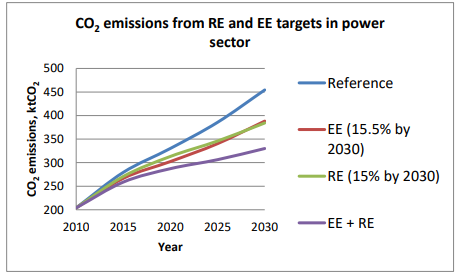
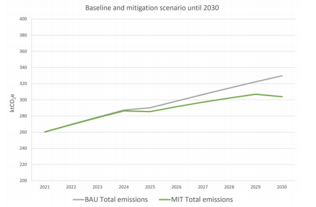
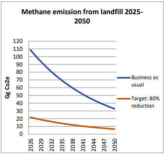
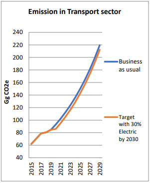

REPUBLIC OF SEYCHELLES
Submission under the Paris Agreement, July 2021
The development of Seychelles’ updated 2021 NDC was led by the Climate Change and Energy Department of the Ministry of Agriculture, Climate Change and Environment.
The Government of Seychelles would like to express our appreciation to the Nationally Determined Contribution Partnership (NDCP) for supporting the update of its NDC, through the Climate Action Enhancement Package (CAEP) by its in-country facilitator who coordinated the project at all levels, especially for engaging the nine supporting partners for this assignment. The notable support of the United Nations Development Programme (UNDP) under the Climate Promise Initiative (UNDP CPI) who was responsible for updating and producing the final document, the World Bank (WB) for revising and updating the adaptation section and the European Union Technical Assistance Facility (EU TAF) for revising and updating the mitigation section. We would also like to thank Seychelles Conservation and Climate Adaptation Trust (SeyCCAT), the Pew Charitable Trust, the Nature Conservancy (TNC) for their contribution on the Blue Carbon, and we would also like to thank the German Federal Ministry of Environment, Nature Conservation and Nuclear Safety (BMU) for their support on the Refrigeration and Air Conditioning (RAC) sector and IRENA.
Acknowledgements must also go to the broad group of stakeholders – both public and private - who actively participated in many consultations.
Last but not least, thanks also goes to Ms. Rebecca Loustau Lalanne, Principal Secretary for the Climate Change and Energy Department, and Mr. Wills Agricole, the National Focal Point for the UNFCCC, for providing oversight, guidance and support throughout this process.
I have the honor to submit on behalf of the Government of Seychelles the updated and enhanced Nationally Determined Contributions (NDC) of the Republic of Seychelles for the period 2021 – 2030, in response to the call under article 3, 4.2, 4.6, and 4.11 of the Paris Agreement and in particular decision as contained in 4/ CMA 1 adopted at the twenty-fourth meeting of the Conference of Parties (COP 24) serving as the first Meeting of the Parties to the Paris Agreement, despite the COVID-19 pandemic challenges.
This NDC represents Seychelles continued commitment to transform its development trajectories in line to the objectives of the Paris Agreement towards setting the world on a sustainable development course, aiming at limiting warming to 1.5 to 2 degrees C above pre-industrial levels. Seychelles as an environment champion and ocean leadership calls on all Parties to increase ambition in line with the best available and most recent science and obligations under the agreement.
Seychelles is committed to reducing economy wide absolute Greenhouse Gas (GHG) emissions by 293.8 ktCO2e in 2030 (26.4%) compared to business as usual (BAU) scenario.
With its new and enhanced mitigation contributions, Seychelles seeks to achieve a substantial mitigation benefit, lowering the GHG emission to a level of 817 ktCO2eq by 2030, relative to baseline emissions through interventions in the Energy sector including transport and Waste; as well as a lasting adaptation impacts in terms of the Blue Economy and focusing on innovative ways in responding to the adverse impacts of climate change in the areas of water, coastal management, food security, human impacts and improved resilience across communities.
Moreover, within this document there is a chapter dedicated to ocean climate action and blue carbon as nature-based solutions to climate change and Seychelles is committing to protect at least 50% of its seagrass and mangrove ecosystems by 2025 and 100% by 2030, with external support. This will ultimately, help us to achieve net zero by 2050 with natural climate solutions.
So, through this Plan, the Ministry is developing a transparent reporting framework, while also mobilizing other ministries and stakeholders to work in synchronously and collaboratively to implement Seychelles’ NDC.
We thank the NDC Partnership for their collaborations and we are appreciative of the support provided through its 9 supporting partners. The partners are: World Bank, European Union, UNDP, IRENA, GIZ, TNC, Pew Charitable Trust, SeyCCAT and Commonwealth.
As we respond to the demands for immediate action to tackle the Covid-19 pandemic, we cannot forget that with our revised NDC, the climate change crisis will be with us for much longer and demand as urgent, coherent and collective a response with adequate financial support.
This is crucial, to enable us to achieve higher ambition for a climate-smart, resilient, sustainable, and more prosperous Seychelles.
Flavien Joubert
Minister for Agriculture, Climate Change and Environment
Nationally determined contributions (NDCs) or climate change plans are required every five years and are at the heart of the Paris Agreement. The year 2015 was a historic year in which 196 Parties came together under the Paris Agreement to transform their development trajectories so that they set the world on a course towards sustainable development, aiming at limiting warming to 1.5 to 2 degrees C above pre-industrial levels. All Parties pledged to pursue domestic mitigation measures that are nationally determined, with the aim of achieving the objectives of such contributions. Seychelles submitted its intended Nationally Determined Contribution (INDC) in September 2015, and this became the country’s first NDC upon signature of the Paris Agreement in April 2016.
In June 2020, Seychelles embarked on updating its 2015 NDC to be ready for submission to the UNFCCC Secretariat as per the Paris Agreement by 15 July, 2021, and to be tabled at UN COP26 this November, in Glasgow, UK.
The revision of Seychelles NDC started in June 2020 supported through the NDC Partnership’s Climate Action Enhancement Package (CAEP) through its Technical Assistance Fund.
Despite the current global challenges, related to COVID-19 pandemic, Seychelles remains committed in updating and submitting its NDC in July 2021, in line with the five-year revision requirement under the Paris Agreement. The MACCE implemented a stepwise approach to coordinate the enhancement process between stakeholders from relevant government agencies, development partners, civil society, and the private sector. A Technical Working Committee (TWC) comprised of the relevant technical experts was established to review the current NDC and determined roles and responsibilities for the NDC revision and liaise with the consultants of the 8 supporting partners, headed by the NDC Partnership in-country facilitator.
The NDC Partnership's in-country facilitators played a key role as the Partnership’s national-level interface, operating as a liaison between MACCE and the NDC Partnership and coordinating the implementation of NDC Partnership Plans. The 8 supporting partners assisting Seychelles technically and financially to raise our ambitions by updating mitigation and adaptation targets and broadening the scope of our NDCs to cover a greater part of the economy, are: World Bank, EU, UNDP, IRENA, GIZ, TNC, Pew Charitable Trust and SeyCCAT. We strived to ensure our updated NDC is actionable and achievable by developing a detailed implementation and monitoring plan, and financing strategies.
The Republic of Seychelles is committed to reducing economy wide absolute Greenhouse Gas (GHG) emissions by 293.8 ktCO2e in 2030 (26.4%) compared to business as usual (BAU) scenario by implementing the following:
With its new and enhanced mitigation contributions, Seychelles seeks to achieve a substantial mitigation benefit, lowering the GHG emission to a level of 817 ktCO2eq by 2030, relatively to baseline emissions, as well as a lasting adaptation impact in terms of energy and water security for Seychelles and improved resilience across communities.
The enhanced mitigation contributions include:
The 2030 commitment to reduce economy-wide greenhouse gas (GHG) emissions by 26.4% below business-as-usual (BAU);
The long-term commitment to achieve a decarbonized net-zero emissions economy by 2050 and to boost electricity generation from renewable energies, including marine energy technologies, bio- energies, such as biomass and waste-to-energy, and the use of environment friendly intermittent energy storage technologies;
The 2030 commitment to shift progressively to low carbon transport, including active modes and international maritime transport, starting with public transportation;
The 2030 commitment to use renewable energy (RE) by modernizing the entire electricity sector, increased electricity generation from renewable sources, improved energy efficiency across sectors, and to secure a sustainable and resilient water management system through water supply mobilisation;
The 2030 commitment to ensure that sewage systems and wastewater treatment facilities include nutrients and energy recover;
The commitment to ensure “Responsible Tourism” in a circular economy, defining a 2030 target of reducing GHG emissions from the sector.
As a Small Island Developing State, Seychelles is inherently vulnerable to the impacts and risks associated with climate change, and thus gives high priority to climate adaptation strategies that will improve its resilience to these.
Seychelles new key contributions to climate change adaptation under this NDC include the following commitments and targets, focused on safeguarding the Blue Economy and Blue Carbon ecosystems:
Seychelles intends for coastal planning and infrastructure to be regulated at the national and local level to prioritize the consideration of “blue” Nature-based Solutions (NbS) for climate resilience.
Seychelles will protect its blue carbon ecosystems, i.e., at least 50% of its seagrass and mangrove ecosystems by 2025, and 100% of seagrass and mangrove ecosystems by 2030;
Seychelles will establish a long-term monitoring programme for seagrass and mangrove ecosystems by 2025 and include the GHG sink of Seychelles’ blue carbon ecosystems within the National Greenhouse Gas Inventory by 2025;
Seychelles commits to the implementation of its adopted Marine Spatial Plan and the effective management of the 30% marine protected areas within the Seychelles’ Exclusive Economic Zone;
In addition, Seychelles commits to continue integrating climate change considerations into plans and strategies across all key sectors by 2030 through the following priority actions:
Prioritizing nature-based solutions to protect coastal ecosystems from climate change impacts such as storm surges, flooding and erosion, using the Coastal Management Plan as a guideline for implementation of nature-based solutions;
Adopting an integrated Ridge-to-Reef approach to coastal management that brings together the Seychelles Marine Spatial Plan, the Coastal Management Plan, the Blue Economy Roadmap, the National Biodiversity Strategy and Action Plan and other ongoing initiatives to guide development in sectors such as fisheries and aquaculture, tourism, agriculture, waste management, water resources, biodiversity conservation and urban development;
Developing a Port Development Master Plan, which also caters for growth and includes a climate adaptation strategy;
Improving the management of freshwater resources, implementing the existing Water Resource Management Strategies as part of the Seychelles Water Supply Development Plan, and implementing new strategies to reuse water;
Developing and implementing a climate change strategy for the tourism sector, incorporating long- term sustainable planning and management of tourism infrastructure, and coastal management, in partnership with the private sector;
Updating and continuing with the implementation of the Seychelles National Agriculture Investment Plan and promoting climate smart agriculture including water efficient irrigation, rainwater harvesting and expansion of climate adapted crops and livestock;
Developing and implementing effective, sustainable and license-based fisheries management plans, integrating climate change adaptation, to ensure sustainable use of resources and avoid overexploitation;
Strengthening sustainable land-use planning and management and effective implementation of integrated sustainable development practices, and;
Implementing the National Integrated Emergency Management Plan.
These combined actions will result in the development of climate resilient coastlines, critical infrastructure, blue and green ecosystems, and fisheries, tourism, and agricultural sectors.
The anticipated costs of implementation for both mitigation and adaptation sector is over USD 600mn over the next decade.
The costs for the implementation of key climate change adaptation actions are based on a mixture of costs derived from national sectoral strategies that have actions which contribute to addressing climate change impacts, as well as costs from on-going initiatives, and costs from projects with similar objectives funded by the Green Climate Funds. These estimated and indicative costs will be further outlined during the investment planning phase planned as a next step from the NDC.
The updated of Seychelles NDC, presents significant opportunities to align the climate and development agendas to promote sustainable growth,
It is a clear demonstration to Seychelles citizens and global climate change community that the government is committed to delivering climate change actions and meeting its greenhouse gas emissions targets, consistent with its obligations under the Paris Agreement and its associated guidelines.
The implementation of the NDC will be crucial, to achieve higher ambition for a climate-smart, resilient, sustainable, and more prosperous Seychelles.
The Republic of Seychelles submitted its Intended Nationally Determined Contribution (INDC) in 2015, which became its Nationally Determined Contribution (NDC) upon Seychelles’ ratification of the Paris Agreement on 29th April 2016.
As a Small Island Developing State (SIDS), and non-Annex I party to the Paris Agreement the Republic of Seychelles acknowledges that it is especially vulnerable to climate change impacts, being a net sink of carbon, it gives priority concern for climate change adaptation over mitigation.
The revised submission comes during the global SARS Covid 19 pandemic that severely paralysed the country’s fragile economy with earnings from the tourism and fisheries sectors significantly below normal.
These threats, coupled with environmental threats such as Climate Change are likely to be harder felt by SIDS like Seychelles than other countries hence re-iterating the need to formulate more effective adaptation strategies.
The Republic of Seychelles submitted its second national communication to the UNFCCC in 2011 and is only now consolidating its third national communication. Data from the second national communication was used for the INDC. For this revision updated Greenhouse Gas inventories were carried out for the sectors mentioned in the NDC in accordance to latest IPCC guidelines in view that this was being completed ahead of the third communication. The NDC targets have been based on these updated inventories.
With this submission, the Republic of Seychelles hereby updates its NDC, re-iterating and improving upon its conditional commitments towards increasing the reduction of greenhouse gas emissions from 188 ktCO2e, stated in NDC 2015, to 293,8 ktCO2e by 2030, concomitantly increasing its mitigation contribution and improving its adaptation strategies to effectively respond to climate change in the context of sustainable development, with a particular emphasis on Seychelles’ Blue Economy, supported and enabled by technology, financing and capacity building.
This revised submission consists of seven parts; 1) Introduction, 2) Seychelles updated Nationally Determined Contribution, 3) Information for clarity, transparency and understanding (ICTU) of the NDC, 4) Mitigation Contribution, 5) Adaptation contribution, 6) Cross-cutting areas of action, and 7) Supplementary information to the updated Seychelles NDC.
The Republic of Seychelles is committed to reducing economy wide absolute Greenhouse Gas (GHG) emissions by 293.8 ktCO2e in 2030 (26.4%) compared to business as usual (BAU) scenario.
|
1.Quantifiable information on the reference point (including, as appropriate, a base year) |
|
|
(a) Reference year, base year, reference period or other starting points |
The reference year for the target is 2030 and the target is expressed relative to business-as-usual emissions in this year. |
|
(b) Quantifiable information on the reference indicators, their values in the reference year, base year, reference period and or other starting points and as applicable in the target year |
|
|
(c) For strategies, plans and actions referred to in Article 4, paragraph 6, of the Paris Agreement, or polices and measures as components of nationally determined contributions where paragraph 1(b) above is not applicable, Parties to provide other relevant information; |
Seychelles is a SIDS with greater carbon sequestration than greenhouse gas emission. It remains vulnerable to climate change in particular to sea level rise, increase in sea surface temperature, ocean acidification, flooding, high intensity rainfall and coastal erosion. The impacts are so severe and wide ranging that successful economic development is greatly threatened by climate change. The implementation of sectoral strategies important to SIDS’ development is seen as the main adaptation strategy to climate change. Adaptation is of primary concern in SIDS relative to mitigation, although effort is being placed on achieving mitigation target in 1b above. Seychelles will continue to maintain an economy wide emission reduction target in the context of sustainable development, supported and enabled by technology, financing and capacity building in a measurable, reportable and verified manner. |
|
(d) Target relative to the reference indicator, expressed numerically, for example in percentage or amount of reduction |
Conditional target emission is 73.7% (820.7 ktCO2e) relative to business-as- usual emissions in 2030
|
|
(e) Information on sources of data used in quantifying the reference point: |
The source data for energy and transport is that from the Seychelles Energy Commission 2017 report, which provided the energy, consumed in the various sectors. The RAC sector target was based on technical assessments and data from “The Greenhouse Gas Inventory & Mitigation Strategies for the Refrigeration and Air Conditioning Sector in the Seychelles (2020)”. The results are presented in the report “RAC sector input to the Republic of Seychelles NDC”. Vehicle numbers were obtained from National Statistics Bureau. Waste data obtained from the waste section of the Ministry of Agriculture Climate Change and Environment and estimates in Gonzalves, C; Waste Assessment Report 2017. Further assessments will be carried out under the Third National Communication expected by January 2022 |
|
(f) Information on the circumstances under which the Party may update the values of the reference indicators: |
The Third National Communication is currently under development and data from this process may be used to further update the reference indicator, business as usual scenario. |
|
2. Timeframe and or period of implementation |
|
|
(a) Time frame and period of implementation |
Start year: 2020; End year: 2030 |
|
(b) Whether it is a single-year or multi-year target, as applicable |
The initial multi-year target has been revised to a single-year end target (2030) |
|
3. Scope and Coverage |
|
|
(a) General description of the target: |
Seychelles’ target to reduce emissions relative to business-as-usual by 2030, covers the energy sector (supply and end-use), refrigeration and air conditioning (RAC), transportation and waste management. |
|
(b) Sectors, gases, categories and pools covered by the nationally determined contribution, including, as applicable, consistent with Intergovernmental Panel on Climate Change (IPCC) guidelines; |
Key sectors covered: Power sector, Refrigeration and Air-Conditioning (RAC), Land Transport & Waste Management. GHG covered are: carbon dioxide (CO2), methane (CH4), HFCs. For Power sector; the targets in the previous NDC are maintained which was derived from the Energy policy of 2009. The policy and energy strategy is currently being reviewed. A new policy document will be presented to the Government of Seychelles (GoS), for approval in July 2021. The target is 15.5% energy efficiency and 15.0% renewables by 2030. These targets are very ambitious for a Small Islands Developing State, and Seychelles is currently producing 5.0% RE and will need to scale to plus 10.0% in 10 years taking into account economic growth. The foreseen RE technologies to be used will be solar PV and wind energy for electricity production. GHG target reduction of 124 kt CO2e is foreseen by 2030. For the RAC sector, the key sub-sectors of split air conditioners (split ACs), domestic refrigerators and stand-alone refrigerators for commercial operation (commercial refrigeration) will be the aim of mitigation measures for the transformations of these sub-sectors towards energy-efficient and climate- friendly appliances. These measures include the implementation and enforcement of regulations, which incentivize the transition to low-Global Warming Potential (GWP) refrigerants through a staggered levy system and VAT exemptions and thus support the reduction of HFC-related (direct) emissions. These regulations are in effect since February 2021. The aim is to ban high-GWP refrigerants for both air conditioning and domestic and commercial refrigerators (stand-alone units) starting in 2025 (domestic and commercial refrigerators) and 2030 (split ACs). Minimum energy performance standards (MEPS) and labels will be introduced to increase the energy efficiency of appliances leading to a decrease of emissions from electricity consumption (indirect emissions). The transition to energy efficient and climate-friendly cooling solutions will be supported by skills enhancement programs for RAC technicians that cover the handling of low-GWP, and especially of natural refrigerants. The compliance with regulatory measures is supported by skill development of custom officials. The annual reduction of refrigerant emissions achieved by a full implementation of these actions in the year 2030 is estimated at around 6 ktCO2e compared to the sectoral baseline and 24 ktCO2e cumulated for the period 2021-2030. Moreover, an additional indirect emission reduction of around 20 kt CO2e would be achieved through electricity savings in the year 2030, resulting in a cumulated mitigation potential of 53 ktCO2e for the period 2021-2030. The total accumulated mitigation potential (direct and indirect emissions) is estimated at around 77 ktCO2e for the period up to 2030. Additional mitigation potential can be tapped by leap-frogging to cooling appliances using natural refrigerants with negligible GWP. For all three prioritized sub-sectors, natural refrigerant appliances are available and can be promoted through the roll-out of corresponding incentive schemes, for example by introducing a rebate scheme in all three prioritized sub-sectors to cover the incremental costs. The mitigation measures that are being implemented beyond the obligations under the KA are conditional on receiving international financial and technical support, including through Article 6 of the Paris Agreement. A close coordination between implementation of the NDC and the KA will be ensured. For transport, the previous NDC was based on number of vehicles in 2030 based on data from the Second National Communication with total emission at 167 kt CO2. The previous targets was 30% vehicles to be electric by 2030 thus emission reduced to 117kt CO2 corresponding to 50.1kt CO2 savings. For this update, two changes were made. Firstly the total number of vehicles was updated with data from the National Bureau of Statistics and projected to 2030. For the year 2030 the estimate is 70,954 units compared to previous of 20,041. The amount of fuel (disaggregated for gasoline and diesel) being used in the transportation sector was obtained from the Seychelles Energy Commission Annual report 2017 (2015 data). A ratio of fuel per vehicle was obtained for each fuel type and extrapolated for the number of vehicles projected in 2030. This gave the projected amount of each fuel to be consumed in this sector with gasoline estimated at 86.27kt for 2030. It is assumed that electric vehicles will replace gasoline in the first instance to diesel vehicles, which are primarily used for commercial transportation. The conversion of fuel to GHG emission was done with emission factor in the most updated IPCC software 2020 version by inputting the projected amounted of fuel and using default values. The result was 242 ktCO2 by 2030 under business as usual. The 30% electric target is hence revised to 72.5kt ktCO2 GHG, being more ambitious than in the previous NDC. For waste management, the Government policy in the previous NDC was to capture 50% landfill gas from disused Providence I landfill for flaring by 2025 (17kt CO2e). At the time of this update (2021), the Country is making use of Providence II landfill (disposal unit 1) since 2015 and with expected end life of 2025. The previous target was based on methane capture from Providence I in 2025, which will be very low. This revision now assumes that this will be done for Providence II landfill where higher gas volume will be available. The strategy to install machinery to extract and flare methane by 2025 is being maintained however the target is being made more ambitious by collecting 80% methane from Providence II. This is expected to result in mitigation of 71.2kt CO2e in 2030 reducing the business as usual (BAU) emission from 88.96kt CO2e to 17.79kt CO2e. Over the next 20 years (2030- 2050) this measure will mitigate 1,349kt CO2e from the atmosphere. GWP for methane used is updated to 28 in accordance to the IPCC 5th assessment report. |
|
c) How the Party has taken into consideration paragraphs 31 (c) and (d) of decision 1/CP.21: |
Seychelles is committed over time to extend the scope of its NDC to all categories of anthropogenic emissions in line with paragraph 31(c). |
|
(d) Mitigation co-benefits resulting from Parties’ adaptation actions and/or economic diversification plans, including description of specific projects, measures and initiatives of Parties’ adaptation actions and/or economic diversification plans. |
Seychelles is committed to mapping the full extent of the blue carbon seagrass and mangrove ecosystems within its waters and measuring their carbon stock values. These assessments will inform our goal to include these ecosystems within our GHG inventory by 2025. |
|
4. Planning Processes |
||
|
(a) Information on the planning processes that the Party undertook to prepare its nationally determined contribution and implementation plans, including: domestic institutional arrangements, public participation and engagement with local communities and indigenous peoples, in a gender-responsive manner. |
||
|
(i) Domestic institutional arrangements, public participation and engagement with local communities and indigenous peoples, in a gender-responsive manner |
The NDC updating process was carried out by a team of local and international consultants under the auspices of the Department of Climate Change. Unfortunately, the revision was carried out during the SARS- Covid19 epidemic with restrictions to organize physical meetings. However, stakeholder awareness and consultations were done with the help of other platforms such as virtual workshops via zoom, telephone communication and the use of Google Forms to gather information from community members that address issues around gender and youth into the NDC process. The engagement process was focus on three core areas that were based on consultations with community members and the review of relevant literature. They include the following: (i) Review of 2015 NDC through gender and youth perspective, (ii) An analytical study on the relationship between climate change, gender and youth, and (iii) Citizen’s charter for climate action and empowerment. Key gaps were identified alongside proposed recommendations to ensure a gender-responsive NDC that is all-inclusive and addresses issues of inequality across sectors and different levels of decision making. |
|
|
(ii) Contextual matters, including, inter alia, as appropriate: National circumstances, such as geography, climate, economy, sustainable development and poverty eradication; |
a. National circumstances, such as geography, climate, economy, sustainable development and poverty eradication |
Seychelles is an archipelagic Small Island Developing State in the western Indian ocean. The country is composed of granitic islands where the majority of the population resides and outer coralline islands spread over an EEZ of 1.3 million km2. The climate is tropical characterised by a dry season spread across the months of April to October and wet monsoon season from November to March. The geography of the main island is characterised by narrow coastal zone with high-forested granite mountains of the interior. In order to safeguard watershed areas and places of high biodiversity including endemic species, most of the highlands are protected. The country has high economic dependence on the Blue Economy, in particular Tourism and Fisheries and no other high value natural resources. All major infrastructure is located along the narrow coastal plains and on reclaimed land at height no greater than 2.5 m above mean sea level. The country has high coastal population density resulting in serious climate change vulnerability. |
|
b. Best practices and experience related to the preparation of the nationally determined contribution; |
Seychelles’ experience with this update has highlighted the constraint of small countries in particular to carry out Greenhouse Gas inventories, update its national communication to the Convention retain technical capacity and communicate relevant information to stakeholders. The NDC was formulated before the third national communication, which means that it could not include inventory results of other categories such as LULUCF. |
|
|
c. Other contextual aspirations and priorities acknowledged when joining the Paris Agreement; |
Seychelles will continue requiring international support in particular transitioning to clean and renewable energy, boosting human resource capacity and financing of mitigation and adaptation measures. |
|
|
(b) Specific information applicable to Parties, including regional economic integration organizations and their member States, that have reached an agreement to act jointly under Article 4, paragraph 2, of the Paris Agreement |
Not applicable. Seychelles is not part of any joint fulfilment agreement under Article 4, paragraph 2 of the Paris Agreement |
|
|
c) How the Party’s preparation of its nationally determined contribution has been informed by the outcomes of the global stocktake, in accordance with Article 4, paragraph 9, of the Paris Agreement; |
The first global stocktake will take place in 2023. Seychelles participated in the Talanoa Dialogue in 2018, which generated political momentum for enhanced climate action, including calling for Parties to update their NDCs. The preparation of Seychelles’ enhanced NDC was informed by the recommendations of the Talanoa Call for Action, taking into account national circumstances. |
|
|
(d) Each Party with a nationally determined contribution under Article 4 of the Paris Agreement that consists of adaptation action and/or economic diversification plans resulting in mitigation co- benefits consistent with Article 4, paragraph 7, of the Paris Agreement to submit information on: |
(i) How the economic and social consequences of response measures have been considered in developing the nationally determined contribution; |
Not applicable |
|
ii) Specific projects, measures and activities to be implemented to contribute to mitigation co-benefits, including information on adaptation plans that also yield mitigation co-benefit. |
Not applicable |
|
|
5. Assumptions and methodological approaches, including those for estimating and accounting for anthropogenic greenhouse gas emissions and, as appropriate, removals |
||
|
(a) Assumptions and methodological approaches used for accounting for anthropogenic greenhouse gas emissions and removals corresponding to the Party’s nationally determined contribution, consistent with decision 1/CP.21, paragraph 31, and accounting guidance adopted by the CMA. |
Seychelles has accounted for its anthropogenic GHG emissions using the 2020 Supplement to the 2006 Intergovernmental Panel on Climate Change (IPCC) Guidelines for National Greenhouse Gas Inventories, IPCC Good Practice Guidance and Uncertainty Management in National Greenhouse Gas Inventories specifically, by way of the Sectoral approach. It will use the same methodology to account for other categories of emissions and removals as part of the third national communication. |
|
|
(b) Assumptions and methodological approaches used for accounting for the implementation of policies and measures or strategies in the nationally determined contribution |
See 5(a) above. Seychelles will also apply specific assumptions and methodologies, where relevant, when accounting for progress of various policies and measures in its Biennial Update Report or Biennial Transparency Report |
|
|
(c) If applicable, information on how the Party will take into account existing methods and guidance under the Convention to account for anthropogenic emissions and removals, in accordance with Article 4, paragraph 14, of the Paris Agreement, as appropriate |
Seychelles is and will continue to use methods and guidance prepared under the Convention as per 5(a) above |
|
|
(d) IPCC methodologies and metrics used for estimating anthropogenic greenhouse gas emissions and removals |
Seychelles’ emissions for CO2, CH4, are derived using the 2006 IPCC Guidelines (2020 update) using The Tier 1 methodology via the Sectoral approach. Higher tier methodology will be used, where relevant and depending on availability of data. HFC emissions (of the RAC sector) are projected using the 2006 IPCC Guidelines (2020 update), Tier 2a approach (emission factor approach which considers activity data (sales) and installed equipment as well as emission factors during operation and disposal of RAC equipment). Electricity related emissions of the RAC sectors are derived from the projected electricity consumption of the installed equipment |
|
|
(e) Sector-, category- or activity- specific assumptions, methodologies and approaches consistent with IPCC guidance, as appropriate, including, as applicable |
Seychelles will account for reporting of GHG emissions and removals from the LULUCF sector in accordance with the 2020 Supplement to the 2006 IPCC Guidelines for National Greenhouse Gas Inventories |
|
|
(i) Approach to addressing emissions and subsequent removals from natural disturbances on managed lands |
GHG emissions and removals from natural disturbances, if any, will be accounted for in accordance with the prescribed 2006 IPCC Guidelines. |
|
|
(ii) Approach used to account for emissions and removals from harvested wood products |
Due to insignificant scale of harvested wood products in Seychelles these were not included in the NDC. |
|
|
(iii) Approach used to address the effects of age-class structure in forests; |
Seychelles will estimate GHG emissions and removals in the LUCF sector, using the maximum tier for which data is available. It will apply country-specific data resulting from field inventory measurements undertaken at regular intervals and estimated by modelling approaches. The field measurements will take into consideration tree growth information across the range of tree species and diameter classes for all forest types. |
|
|
(f) Other assumptions and methodological approaches used for understanding the nationally determined contribution and, if applicable, estimating corresponding emissions and removals, including: |
||
|
(i) How the reference indicators, baseline(s) and/or reference level(s), including, where applicable, sector-, category- or activity-specific reference levels, are constructed, including, for example, key parameters, assumptions, definitions, methodologies, data sources and models used; |
To develop the NDC, extensive technical studies were undertaken, including an assessment of Seychelles’ economy-wide energy efficiency and renewable energy potential. Studies included assessing GHG mitigation potential of actions in the energy sector, waste management and transportation sector. These were discussed and validated with national stakeholders in a validation workshop before being sent to cabinet of Ministers for official endorsement. Stakeholder consultations were carried out through online means in view of Covid19 restrictions in place at the time of the update. “The Greenhouse Gas Inventory & Mitigation Strategies for the Refrigeration and Air Conditioning Sector in the Seychelles (2020)” was the main data source for assessing RAC sector mitigation measures. |
|
|
(ii) For Parties with nationally determined contributions that contain non-greenhouse-gas components, information on assumptions and methodological approaches used in relation to those components, as applicable; |
Not applicable |
|
|
(iii) For climate forcers included in nationally determined contributions not covered by IPCC guidelines, information on how the climate forcers are estimated |
Not applicable |
|
|
(iv) Further technical information, as necessary; |
None |
|
|
(g) The intention to use voluntary cooperation under Article 6 of the Paris Agreement, if applicable |
Seychelles is committed to contributing to discussions on international cooperation under Article 6 of the Paris Agreement. Depending on the outcomes, the country will explore the development and application of these mechanisms to support the achievement of its NDC targets. |
|
|
6. How the Party considers that its nationally determined contribution is fair and ambitious in the light of its national circumstances |
|
|
(a) How the Party considers that its nationally determined contribution is fair and ambitious in the light of its national circumstances |
The calculated emission of Seychelles under the second national communication is less than 0.003% of global emissions. Seychelles is also a net sink and under the business as usual (BAU) scenario calculated in the second national communications. It is expected to be a net emitter in 2025. The Seychelles economy was severely impacted by Covid19 in 2020. Despite this, Seychelles is still implementing economy wide emission reduction targets, which has been further enhanced to complement adaptation strategies. In this context the contribution of Seychelles is considered fair and ambitious. |
|
(b) Fairness considerations, including reflecting on equity; |
|
|
(c) How the Party has addressed Article 4, paragraph 3, of the Paris Agreement; |
|
|
(d) How the Party has addressed Article 4, paragraph 4, of the Paris Agreement; |
Seychelles updated NDC is an economy-wide absolute GHG emissions limitation target, which reflects its effort as a developing country Party to address Article 4, paragraph 4, of the Paris Agreement. |
|
e) How the Party has addressed Article 4, paragraph 6, of the Paris Agreement. |
As per 6(d) above |
|
7. How the nationally determined contribution contributes towards achieving the objective of the Convention as set out in its Article 2 |
|
|
(a) How the nationally determined contribution contributes towards achieving the objective of the Convention as set out in its Article 2; |
Seychelles target to limit GHG emissions in the above sectors to 820.7kt CO2e in 2030 and increase its adaptive capacity is in line with the objectives under Article 2 of the Paris Agreement and will help achieve the temperature goal set out in Article 2 paragraph 2(a) and Article 4 paragraph 1 of the Paris Agreement. |
|
(b) How the nationally determined contribution contributes towards Article 2, paragraph 2(a), and Article 4, paragraph 1, of the Paris Agreement. |
|
Deeply supportive of the goals and objectives of the Paris Agreement to limit the global temperature increase to 1.5°C below pre-industrial levels, the Republic of Seychelles submitted its Intended Nationally Determined Contribution (INDC) in 2015. This update deepens and moves beyond the initial set of actions and commitments with respect to scope, sector ambition, balancing of mitigation and adaptation actions, transparency, governance and loss and damage.
With its new and enhanced mitigation contributions, Seychelles seeks to achieve a substantial mitigation benefit, lowering the GHG emission to a level of 817 ktCO2eq by 2030, relatively to baseline emissions, as well as a lasting adaptation impact in terms of energy and water security for Seychelles and improved resilience across communities.
The enhanced mitigation contributions include:
The 2030 commitment to reduce economy-wide greenhouse gas (GHG) emissions by 26.4% below business-as-usual (BAU);
The long-term commitment to achieve a decarbonized economy by 2050 and to boost electricity generation from renewable energies, including marine energy technologies, bio-energies, such as biomass and waste-to-energy, and the use of environment friendly intermittent energy storage technologies;
The 2030 commitment to shift progressively to low carbon transport, including active modes and international maritime transport, starting with public transportation;
The 2030 commitment to use renewable energy (RE) for water supply mobilisation and to secure a sustainable and resilient water management system;
The 2030 commitment to ensure that sewage systems and wastewater treatment facilities include nutrients and energy recover;
The commitment to ensure “Responsible Tourism” in a circular economy, defining a 2030 target of reducing GHG emissions from the sector.
Seychelles supports the use of all of the enhanced ambition instruments under Art. 6 of the Paris Agreement, focusing on energy and mobility under the provision on cooperative approaches (Art. 6.2 Paris Agreement) and on targeting adaptation benefits for rural communities (food and water security and healthy soils) as well as interventions on sustainable tourism and blue habitats (ecosystem services from coastal wetlands and marine resources) under the non-market approaches provision (Art. 6.8 Paris Agreement).
Reducing energy intensity and fostering energy efficiency
Increasing renewable energy targets
Lowering the carbon intensity of mobility
Shifting towards responsible tourism and circular economy
Key contributions of Seychelles to the Paris Agreement
Seychelles’ new key contributions include:
By 2030, Seychelles commits to reduce economy-wide GHG emissions by 26.4% below the BAU scenario.
The 2030 commitments are set with the long-term goal of achieving a decarbonised net-zero emissions economy by 2050.
Key implementation targets focus on modernize the entire electricity sector, increased electricity generation from renewable sources, improved energy efficiency across sectors, the shift from fossil fuel- engineered transport to electrified transport and individual active mobility, enhanced resource rehabilitation and land mitigation measures.
To plan, manage and track progress, Seychelles will build a national climate governance system centered on inclusive consultations, institutional coherence and scientific excellence.
Seychelles plans to continue creating an enabling environment for the adoption of appropriate and relevant green technologies. Similarly, Seychelles’ mitigation commitments directly yield a range of significant adaptation and resilience benefits, and vice versa. Energy sourced from renewables means enhanced energy security for Seychelles across islands as well as self-relied access to clean water. These in turn provides climate resilience for urban and rural families and communities, encourages the production of local farming productions; it also considerably improves the livelihoods of those households living in poverty.
Conversely, many adaptation measures directly yield mitigation co-benefits. Seychelles’ forests, soils and coastal wetlands are important carbon stocks, and all measures directed at protecting and enhancing these ecosystems – meant to reduce erosion, improve or protect against flooding and salination – also maintain and improve the country’s carbon sink capabilities.
As a Small Island Developing State, Seychelles is inherently vulnerable to the impacts and risks associated with climate change, and thus gives high priority to climate adaptation strategies that will improve its resilience to these.
Climate change adaptation has been on Seychelles’ national agenda since 1992 and the country has since developed a number of broad national policies, roadmaps and strategies that integrate climate change risks within the social and economic development sectors. This includes the 2019-2023 National Development Strategy. These plans continue to form the backbone of Seychelles’ commitment to climate change adaptation under this NDC, and will contribute to Seychelles becoming a climate resilient economy.
Seychelles new key contributions to climate change adaptation under this NDC include the following commitments and targets, focused on safeguarding the Blue Economy and Blue Carbon ecosystems:
Seychelles intends for coastal planning and infrastructure to be regulated at the national and local level to prioritize the consideration of “blue” Nature-based Solutions (NbS) for climate resilience.
Seychelles will protect its blue carbon ecosystems, i.e. at least 50% of its seagrass and mangrove ecosystems by 2025, and 100% of seagrass and mangrove ecosystems by 2030,
Seychelles will establish a long-term monitoring programme for seagrass and mangrove ecosystems by 2025 and include the GHG sink of Seychelles’ blue carbon ecosystems within the National Greenhouse Gas Inventory by 2025.
Seychelles commits to the implementation of its adopted Marine Spatial Plan and the effective management of the 30% marine protected areas within the Seychelles’ Exclusive Economic Zone.
In addition, Seychelles commits to continue integrating climate change considerations into plans and strategies across all key sectors by 2030 through the following priority actions:
Prioritizing nature-based solutions to protect coastal ecosystems from climate change impacts such as storm surges, flooding and erosion, using the Coastal Management Plan as a guideline for implementation of nature-based solutions;
Adopting an integrated Ridge-to-Reef approach to coastal management that brings together the Seychelles Marine Spatial Plan, the Coastal Management Plan, the Blue Economy Roadmap, the National Biodiversity Strategy and Action Plan and other ongoing initiatives to guide development in sectors such as fisheries and aquaculture, tourism, agriculture, waste management, water resources, biodiversity conservation and urban development;
Developing a Port Development Master Plan, which also caters for growth and includes a climate adaptation strategy;
Improving the management of freshwater resources, implementing the existing Water Resource Management Strategies as part of the Seychelles Water Supply Development Plan, and implementing new strategies to reuse water;
Developing and implementing a climate change strategy for the tourism sector, incorporating long- term sustainable planning and management of tourism infrastructure, and coastal management, in partnership with the private sector;
Updating and continuing with the implementation of the Seychelles National Agriculture Investment Plan and promoting climate smart agriculture including water efficient irrigation, rainwater harvesting and expansion of climate adapted crops and livestock;
Developing and implementing effective, sustainable and license-based fisheries management plans, integrating climate change adaptation, to ensure sustainable use of resources and avoid overexploitation;
Strengthening sustainable land-use planning and management and effective implementation of integrated sustainable development practices, and;
Implementing the National Integrated Emergency Management Plan.
These combined actions will result in the development of climate resilient coastlines, critical infrastructure, blue and green ecosystems, and fisheries, tourism, and agricultural sectors.
Several climate change mitigation and adaptation priorities cut across many different sectors and require coordinated actions between government, civil society, women, youth groups and private sector partners to build effective climate resilience. These include:
6.1 Capacity Building and Climate Change Education
This is a cross-cutting theme in most of the mitigation and adaptation sub-sectors. Helping citizens and professionals understand how their sector contributes to climate change, how it is affected by climate change (or will be in the future) and what can be done to adapt - these are critical to the achievement of Seychelles’ NDC commitments.
The Seychelles Climate Change Policy (2020) affirms Seychelles’ commitment to “strengthen capacity and social empowerment at all levels to adequately respond to Climate Change”.
To achieve this objective, Seychelles plans to build local capacity through:
Integrating climate mitigation and adaptation content into the curricula of University of Seychelles and other post-secondary education institutions (e.g. Seychelles Tourism Academy, Maritime Training Academy, Seychelles Institute of Technology, Seychelles Institute of Agriculture and Horticulture, etc.
Investing in local skills development, professional development and peer-to peer support networks to assist in mainstreaming climate change mitigation and adaptation considerations into key economic sectors, (e.g. construction and engineering, coastal management, fisheries, agriculture, transportation, energy, tourism)
Expanding and supporting climate change, blue economy and marine education curriculum development, programs and internships, in the formal education system, particularly those that strengthen Science, Technology, Engineering and Mathematics (STEM)1
Supporting informal climate change education programs for the public, businesses, faith groups, and other audiences in collaboration with the media and other partners
In addition, Seychelles plans to:
Build capacity to monitor disaster and climate risks within the Department of Risk and Disaster Management.
Build capacity to implement and monitor climate change actions in sectoral plans and strategies, including in health, energy, agriculture, coastal management, disaster and risk management, tourism, etc.
Make climate change part of human resource planning and development in order to effectively respond to climate change impacts and protect the most vulnerable population in society.
Promote collaboration in climate change capacity building and education programs among partners from government, schools, professional groups, civil society, women, youth groups and the media
Fulfil the rights and aspirations of key populations, vulnerable groups (women, youth children and others) indigenous peoples, disabled persons and other marginalized groups through investments in climate adaptation with particular focus on those left behind.
Expanded opportunities for young people, who are stepping up to the advocacy and innovation challenge of climate change
Encourage life skills and family life education that integrates comprehensive sexuality education as a key part of building climate resilience among young people especially in vulnerable communities prone to climate impacts
Develop pre-service midwifery curricula and other relevant in-service training materials that incorporates climate risks and impacts
Build the capacity of local governments to create permanent and specialized task teams whose year round job is to ensure the maximum protection of the most vulnerable groups before disaster, during and post disaster as well as encourage costing/quantification of costs of inaction on climate change, and
Share best practice at the Paris Committee on Capacity Building to support other Parties.
6.2 Data Collection, Monitoring and Research
It is important for Seychelles to consolidate its knowledge base by developing formal systems for collecting and maintaining data to support informed decision-making and adaptive management related to climate change adaptation and mitigation targets. Examples of this knowledge base include ocean reports, systematic and standardized data collection and methodologies, to build a better (national) knowledge base on the fundamentals for adaptation and mitigation. This will include the development and application of disaggregated population data, particularly for its climate change adaptation actions.
To ensure robust implementation in line with the Enhanced Transparency Framework (ETF) established under the Paris Agreement, Seychelles plans to enact dedicated legislation covering comprehensive monitoring, reporting and evaluation of GHG data, mitigation action as well as adaptation action, and defining a cross-institutional climate governance framework.
Seychelles also commits to undertaking research to better understand, plan for and address the vulnerability across all key sectors. This includes improving understanding of the:
vulnerability of Seychelles’ critical infrastructure to climate change impacts, to identify gaps and priorities
vulnerability of the key economic sectors to climate change, e.g. fisheries, tourism, agriculture
the links between climate change and health trends
Impacts of climate change on marine and terrestrial biodiversity and ecosystems
6.3 Climate Finance
For the implementation of existing climate mitigation and adaptation policy documents, it is important to identify funding resources and mechanisms to secure funding from various sources.
While mobilising substantial domestic funding, Seychelles will rely on international support – technological,
capacity-building and finance – to achieve its 2030 contributions. The Seychelles Government will adopt a Climate Finance Strategy and Roadmap to establish and prioritise how best to incentivise domestic investments and how to direct funding from international public, private and sources for use in different project preparation and financing stages.
It will also commit to undertake a cost assessment of all of our future commitments. An example of this includes implementing a State of the Coast assessment program (tied to the monitoring of the Coastal Management Plan) to understand the real costs of loss of coastal and marine ecosystems, through monitoring the status of key coastal features and the services they provide.
In addition, it will, identify financing mechanisms to support its NDC implementation e.g. multilateral and bilateral funds, insurance products, debt-for-nature swaps, private investment, blue carbon credits and bonds, and other innovative conservation financing mechanisms.
6.4Cross-sectoral coordination
From an institutional standpoint, the success of climate mitigation and adaptation will hinge on improved governance, leadership capacity and coordination between different actors including government, civil society, women, youth groups and the private sector, as well as developing the capacity to plan for climate change impacts, effectively implement and adaptively manage these strategies. The need exists to improve the ability to address low carbons strategies and climate resilience within governmental agencies and institutions, as well as incorporating this knowledge in the policy, legal and regulatory framework. An assessment of the consistency, coordination and incorporation of low carbon pathways and climate resilience is required to enable better coordination among governmental agencies.
This will be undertaken through:
Establishing linkages between responsible government entities to ensure the adoption of appropriate adaptation approaches and improved coordination during the implementation of national plans and strategies that safeguard critical infrastructure and a sustainable blue economy from the impacts of climate change
Strengthening linkages and collaboration between government agencies and private sector organisations to ensure effective coordination of Seychelles’ climate mitigation targets
Operationalising the National Climate Change Council with representation from private sector, women and youth, and
Seeking to involve youth in the Monitoring, Reporting and Verification system of the NDC Implementation.
7.1 Mitigation
Deeply supportive of the goals and objectives of the Paris Agreement to limit the global temperature increase to 1.5°C below pre-industrial levels, the Republic of Seychelles submitted its Intended Nationally Determined Contribution (INDC) in 2015, which became its Nationally Determined Contribution (NDC) upon Seychelles’ ratification of the Paris Agreement on 29th April 2016. This update deepens and moves beyond the initial set of actions and commitments with respect to scope, sector ambition, balancing of mitigation and adaptation actions, transparency, governance and loss and damage.
The revised submission comes immediately after the global SARS Covid 19 pandemic that severely paralysed the country’s fragile economy with earnings from the production sectors of tourism and fisheries significantly below normal. These threats, coupled with environmental threats such as Climate Change is likely to be harder felt by Small Island Developing States like Seychelles than other countries hence re- iterating the need to formulate more effective adaptation strategies. With this submission, the Republic of Seychelles hereby updates its NDC, reiterating and improving upon its commitments towards reducing greenhouse gas emissions.
With its new and enhanced mitigation contributions, Seychelles seeks to achieve a substantial mitigation benefit, lowering the GHG emission to a level of 817 ktCO2eq by 2030, relatively to baseline emissions, as well as a lasting adaptation impact in terms of energy and water security for Seychelles and improved resilience across communities.
The enhanced mitigation contributions include:
The 2030 commitment to reduce economy-wide greenhouse gas (GHG) emissions by 26.4% below business-as-usual (BAU);
The long-term commitment to achieve a decarbonized economy by 2050 and to boost electricity generation from renewable energies, including marine energy technologies, bio-energies, such as biomass and waste-to-energy, and the use of environment friendly intermittent energy storage technologies;
The 2030 commitment to shift progressively to low carbon transport, including active modes and international maritime transport, starting with public transportation;
The 2030 commitment to use renewable energy (RE) for water supply mobilisation and to secure a sustainable and resilient water management system;
The 2030 commitment to ensure that sewage systems and wastewater treatment facilities include nutrients and energy recover;
The commitment to ensure “Responsible Tourism” in a circular economy, defining a 2030 target of reducing GHG emissions from the sector.
To ensure robust implementation in line with the Enhanced Transparency Framework (ETF) established under the Paris Agreement, Seychelles plans to enact dedicated legislation covering comprehensive monitoring, reporting and evaluation of GHG data, mitigation action as well as adaptation action, and defining a cross-institutional climate governance framework.
While mobilising substantial domestic funding, Seychelles will rely on international support – technological, capacity-building and finance – to achieve its 2030 contributions. The Seychelles Government will adopt a Climate Finance Strategy and Roadmap to establish and prioritise how best to incentivise domestic investments and how to direct funding from international public, private and sources for use in different project preparation and financing stages.
Seychelles supports the use of all of the enhanced ambition instruments under Art. 6 of the Paris Agreement, focusing on energy and mobility under the provision on cooperative approaches (Art. 6.2 Paris Agreement) and on targeting adaptation benefits for rural communities (food and water security and healthy soils) as well as interventions on sustainable tourism and blue habitats (ecosystem services from coastal wetlands and marine resources) under the non-market approaches provision (Art. 6.8 Paris Agreement).
Reducing energy intensity and fostering energy efficiency
Increasing renewable energy targets
Lowering the carbon intensity of mobility
Shifting towards responsible tourism and circular economy
7.1.1 Key contributions of Seychelles to the Paris Agreement
Seychelles’ new key contributions include:
By 2030, Seychelles commits to reduce economy-wide GHG emissions by 26.4% below the BAU scenario.
The 2030 commitments are set with the long-term goal of achieving a decarbonised net-zero emissions economy by 2050.
Key implementation targets focus on modernize the entire electricity sector, increased electricity generation from renewable sources, improved energy efficiency across sectors, the shift from fossil fuel- engineered transport to electrified transport and individual active mobility, enhanced resource
rehabilitation and land mitigation measures.
To plan, manage and track progress, Seychelles will build a national climate governance system centered on inclusive consultations, institutional coherence and scientific excellence.
Seychelles plans to continue creating an enabling environment for the adoption of appropriate and relevant green technologies. Similarly, Seychelles’ mitigation commitments directly yield a range of significant adaptation and resilience benefits, and vice versa. Energy sourced from renewables means enhanced energy security for Seychelles across islands as well as self-relied access to clean water. These in turn provides climate resilience for urban and rural families and communities, encourages the production of local farming productions; it also considerably improves the livelihoods of those households living in poverty.
Conversely, many adaptation measures directly yield mitigation co-benefits. Seychelles’ forests, soils and coastal wetlands are important carbon stocks, and all measures directed at protecting and enhancing these ecosystems – meant to reduce erosion, improve or protect against flooding and salination – also maintain and improve the country’s carbon sink capabilities.
7.1.2 Sectors and gases covered
Power sector, including the Refrigeration and Air Condition subsector, Land Transport and Waste Management. The Greenhouse Gases covered are Carbon Dioxide (CO2), Methane (CH4) and Hydrofluorocarbons (HFC).
7.1.2.1 Energy
Seychelles is an island country with a high external energy dependence, both for energy production and transportation, since it needs to import the most used fuels, namely petroleum products and their derivatives. Biomass consumption is mainly focused on firewood in rural areas and the outskirts of cities for food preparation. RE sources are mainly wind and solar, with hydropower, wave, waste and biomass sources playing almost no role in Seychelles’ energy matrix. With respect to electrical energy, the vast majority are produced from thermal power plants using diesel and fuel oil.
7.1.2.1.1 Power sector
For the Power sector, the target in the previous NDC is being maintained which was derived from the Energy policy of 2009. The policy and energy strategy are currently being reviewed. The target is 15.5% energy efficiency and 15% renewables in 2030. These targets are very ambitious for a Small Island Developing State and Seychelles is currently producing 5% RE and will need to scale to 10% in 10 years taking into account economic growth.

Figure 1 – CO2 emissions from RE and EE targets in power sector
7.1.2.1.2 Refrigeration and air conditioning sector
For the RAC sector, emissions from hydrofluorocarbons (HFCs) used as refrigerants are addressed by the commitments made under the Kigali Amendment (KA) to the Montreal Protocol on Substances that Deplete the Ozone Layer as ratified by the Republic of Seychelles in July 2019. The Kigali Amendment mandates a capping of HFC consumption in 2024 and a first reduction step of 10% from 2029 onwards. The cap of HFC consumption is estimated at 30.0 ktCO2e. The hydrochlorofluorocarbon (HCFC) part of the baseline is not considered. In order to prevent a lock-in of highly climate-damaging HFC refrigerants during the period between now and the first KA phase-down step in 2029, the Republic of the Seychelles aims to implement early action on the reduction of HFCs and the introduction of climate-friendly alternatives. The key RAC sub-sectors for mitigation are split air conditioners (split ACs), domestic refrigerators and stand-alone refrigerators for commercial operation (commercial refrigeration).
Minimum energy performance standards (MEPS) and labels will be introduced to increase the energy efficiency of appliances leading to a decrease of emissions from electricity consumption (indirect emissions).
The transition to energy efficient and climate-friendly cooling solutions will be supported by skills enhancement programs for RAC technicians that cover the handling of low-GWP, and especially of natural refrigerants. The compliance with regulatory measures is supported by skill development of custom officials.

Figure 2 – RAC mitigation measures – mitigation potential
To contribute to the key climate change mitigation actions reducing energy intensity and fostering energy efficiency, Seychelles undertakes to:
Reduce energy demand through change in the energy mix and 15% energy efficiency improvements by 2030. With adequate support, the reduction commitment can be increased below BAU projections. To contribute to the target the following measures are planned:
Decrease electricity consumption in 2030, giving more emphasis on energy efficiency.
Modernize and strengthen the electricity transmission and distribution networks.
Accelerate smart grid development and general use of smart meters.
Increase energy efficiency practices in public lighting, buildings, appliances, and other practices of energy efficiency and savings.
Adoption of technical specifications and criteria in building codes for low-carbon, low-tech, passive, bioclimatic, self-reliant construction techniques.
To contribute to the key climate change mitigation actions to increasing renewable energy targets, Seychelles undertakes to:
Make a major shift towards the low-carbon economy by increasing the RE share in the electricity supply to 15 % in 2030. The RE target may go up to 100% in outlying islands.
Promote bioenergy and marine energy technologies.
Increase RE storage capacity.
Implement micro-energy network in outlying islands.
Installing waste-to-energy plants for methane recovery in landfill areas.
Introduce solar desalinisation plants.
To contribute to the key climate change mitigation actions to increasing the share of energy-efficient and climate-friendly cooling appliances, Seychelles undertakes to:
Transform the three sub-sectors of split air conditioners (split AC), domestic refrigerators and stand- alone refrigerators for commercial operation (commercial refrigeration), towards energy-efficient and climate-friendly appliances.
Implement and enforcement of regulations to incentivize the transition to low-GWP through a staggered levy system and VAT exemptions and thus support the reduction of HFC-related (direct) emissions. These regulations are in effect since February 2021.
Ban on high-GWP refrigerants for both air conditioning and domestic and commercial refrigerators (stand-alone units) starting in 2025 (domestic and commercial refrigerators) and 2030 (split ACs).
Introduce Minimum Energy Performance Standards (MEPS) and labels to induce a reduction of emissions from electricity consumption (indirect emissions).
Introduce skill development programmes for RAC technicians to guarantee proper handling of low- GWP and especially natural refrigerants and for customs officials to ensure compliance with regulatory measures.
7.1.2.2 Transport
The transport sector for its part remains a major consumer of fossil fuels as motor vehicles: in passenger cars, sea and air vessels, burn gasoline, diesel or jet fuel in internal combustion engines. The Government of Seychelles has identified the promotion of active and electric mobility as a strategy for reducing road transport-related GHG emissions as well as increasing the share of RE storage and penetration.
To contribute to the key climate change mitigation actions on lowering the carbon intensity of the mobility sector, Seychelles undertakes to:
Reduce high-carbon mobility by urban planning and use of TIC.
Create secure and attractive urban cycling and walking pathways and routes
Reduce GHG emissions in domestic maritime transport.
Electrify the vehicles fleet with a priority for public transportation, collective, high-passenger load, duty and commercial vehicles over private, individual, low-passenger load vehicles, to make mobility shift socially inclusive and create public adherence and local jobs.
Promote EV mobility in Seychelles.
7.1.2.3 Solid Waste Management
For waste management, the Government policy in the previous NDC was to capture 50% landfill gas from disused Providence I landfill for flaring by 2025 (17kt CO2e). At the time of this update (2021), the Country is making use of Providence II landfill (disposal unit 1) since 2015 and with expected end life of 2025. The previous target was based on methane capture from Providence I in 2025, which will be very low. This revision now assumes that this will be done for Providence II landfill where higher gas volume will be available. The strategy to install machinery to extract and flare methane by 2025 is being maintained however there the target is being made more ambitious by collecting 80% methane from Providence II. This is expected to result in mitigation of 71.2kt CO2e in 2030 reducing the business as usual (BAU) emission from 88.96kt CO2e to 17.79kt CO2e. Over the next 20 years (2030-2050) this measure will mitigate 1,349kt CO2e from the atmosphere. GWP for methane used is updated to 28 in accordance to the IPCC 5th assessment report.
7.1.2.4 Responsible tourism and circular economy
The tourism sector is capable of generating a lot of economic benefits, including positive impacts on the local economy and small businesses. Traditional tourism is organised in a linear way and thus may well lead to exploitation of natural resources, especially on islands that are primarily accessed by tourists through air travel. Circular economy has been proposed in recent years as a model that can help make tourism more sustainable. The tourism sector has the capacity to combine economic, social, cultural and environmental dimensions of sustainability and contribute to their mutual improvement. The circular tourism sector refers to its ability to trigger and stimulate circular flows with the aim of aligning the tourism sector and sustainable resource management.
Seychelles’ contributions for 2030 are as follows:
To contribute to the key climate change mitigation actions on responsible tourism and the circular economy, Seychelles undertakes to;
Strengthen sustainable tourism as a factor for local empowerment and economic development, ensuring climate resilience and diversification and increasing decent employment. International and national efforts combined seek to reduce overall GHG emissions from tourism by 20% per visitor/day by 2030. Seychelles undertakes to develop a roadmap for the phased transition to a circular economy for the years 2030 to 2040. The circular economy aims to contribute to climate protection and adaptation to climate change. To contribute to the target the following measures are planned:
By 2025 mechanism(s) to facilitate importation (pending an appropriate tax regime of electric transport infrastructure must be in place such as electric charging power stations
By 2030, 30% of large tourism businesses (DMCs, taxis, etc) must have electric transport in their fleet.
By 2030, small and medium tourism businesses (omnibuses, taxis) must have 20% electric transport.
30% of large hotels must phase out HFCs and move towards hydro–carbon refrigeration and centralized cooling systems by 2030.
By 2030, 30% of large hotels must have water harvesting and recycling systems in place.
20% of small and medium tourism establishments must have water harvesting and recycling systems by 2030.
Upcoming developments should mainstream climate adaptation and mitigation measures in their initial development plans including adaptation to nature ecosystems.
Current developments should have a re-greening program for their properties by 2030.
By 2030, all tourism accommodation and catering businesses should have phased out the use of non- recyclable plastic bottles and replace with recyclable containers.
All management and employees of tourism businesses must be educated on energy efficiency and renewable energy practices by 2030.
As a small island developing state, Seychelles is inherently vulnerable to the impacts and risks associated with climate change, and thus gives high priority to climate adaptation strategies that will improve resilience. The country adopts a ‘Ridge to Reef’ approach to adaptation, recognizing the interconnections between terrestrial, coastal and marine ecosystems and adaptation strategies to protect, manage and restore them2. Seychelles’ “Blue Economy”3 recognizes the centrality of marine and coastal ecosystems to sustainable development, resilience and human well-being, and is hence an integral part of the country’s climate adaptation response4.
Ninety percent of Seychelles’ economic activities, livelihoods and critical infrastructure are concentrated on the narrow, low-lying coastal zones of the main islands, often only 2-4 meters above sea level4. Successful adaptation to climate change will of necessity involve effective management of coastal resources, building coastal resilience and strengthening the capacity of Blue Economy sectors to withstand and manage climate- risks5.
Such adaptation strategies will require significant investments in a variety of key areas such as6, 7:
Strengthening of technical and institutional capacity in monitoring and research
Improving the quality of forecasts, early warning systems and climate information services
Vulnerability assessments and protective measures informed by sex-disaggregated population data
Development and implementation of better and appropriate policies for integrated coastal zone management
Building more climate and gender responsive social protection systems
Improved response and recovery from climate and disaster shocks
Seychelles’ Blue Economy and associated sectors depend on ecosystems, natural capital and protected coastal assets, which are directly affected by climate change. Unsustainable use of natural systems in Seychelles enhances the impacts of climate change. Examples include coastal erosion and loss of valuable coastal habitats, potentially increasing the population’s vulnerability to climate change. Tourism and fisheries are Seychelles’ most important economic sectors, which depend on thriving and resilient ecosystems, beaches and safe coastlines. These geographic and socio-economic characteristics make Seychelles and its economy vulnerable to the impacts of climate change.
Scientific evidence indicates that Seychelles already experiences climate change. Increased average annual temperature change8, changes in rainfall patterns and flash floods since 19909 illustrate this. Ocean heat content increases since 1970 and incidences of El Niño events are expected to result in more frequent coral bleaching10. The primary impacts of climate change on Seychelles are expected to be caused by sea level rise (0.3 meters by 2050 and 0.6 meters by 2100, relative to 2010) and an increase in storm severity, creating coastal hazards and increasing coastal vulnerability11. Natural habitats and biodiversity, the coastal zone and human settlements, agriculture, water resources, fisheries and human health are the key socio-economic sectors considered for sensitivity and vulnerability to climate change in Seychelles6.
Adaptation progress
The Republic of Seychelles recently updated its climate change policy and is currently revising its Climate Change Strategy and Adaptation communication in line with Article 7 of the Paris Agreement and Decision 9 CMA.1 and its annexes. The country is also currently working on its Third National Communication to the UNFCCC.
Climate change adaptation has been on Seychelles’ national agenda since 1992 and the country has since developed a number of broad national policies, roadmaps and strategies that aim to facilitate climate change adaptation in Seychelles12. Most recently, the Seychelles National Climate Change Policy was adopted in 2020 with the aim “to facilitate a coordinated, coherent, proactive and effective response to the local, regional and global challenges and opportunities presented by Climate Change”. Another key response is Seychelles’ Blue Economy Strategic Framework and Roadmap adopted in 2018, which focuses on the principle of “reducing vulnerability to economic and environmental shocks and resilience planning” 13. In addition, Seychelles has several sectoral policies and plans that address climate resilience, including for coastal management, fisheries, health, disaster and risk management, biodiversity conservation and food security. These plans form the backbone of Seychelles’ climate adaptation response under this NDC.
Priorities for climate change adaptation in Seychelles under this NDC
This updated Nationally Determined Contribution for climate change adaptation provides an overview of the current vulnerability, context, and priorities for action for each of the following sub-sectors critical for Seychelles’ development:
Coastal Management
Critical Infrastructure
Fisheries
Tourism
Agriculture and Biosecurity
Resilience of Blue Carbon Ecosystems
Biodiversity Conservation
Health
Early Warning and Disaster Risk Management
7.2.1 Coastal Management
The granitic rocky outcrops and white sandy beaches along Seychelles’ coastline are its’ main tourist attraction4, 14, however the country’s coastal ecosystems also include mangrove forests, freshwater wetlands, dunes, seagrass beds and coral reefs. Seychelles’ Blue Economy sectors, particularly tourism and fisheries, rely on these rich coastal ecosystems, natural capital and the services they provide, such as flood and erosion protection, fish nurseries and recreation. This subsector focuses on the protection, restoration and management of coastal areas, critical for climate adaptation and the Blue Economy. The subsequent subsector focuses on built, critical infrastructure located in the narrow coastal zone within these ecosystems.
Vulnerability
Seychelles’ coastal ecosystems help to protect the coast from erosion and flooding aggravated by climate change, but are themselves subject to climate impacts. Coral reefs are important for Seychelles’ Blue Economy, due to their wave attenuation capacity, provision of nursery grounds and habitat for many fish species, and aesthetics for tourism and recreation. Reefs are threatened by increasing sea surface temperature, ocean acidification15 and coral bleaching events like those of 1998 and 2016 in Seychelles, both of which are poised to increase in intensity and frequency due climate change16, leaving little time for reef recovery between these events17. Loss of live coral contributes to a reduction in flood and erosion protection by these natural breakwaters18, impacting coastal infrastructure and livelihoods connected to the fisheries sector as well as the tourism sector.
Seychelles is known for its pristine beaches, which are important for attracting tourists19. Wide and slowly sloping beaches can reduce wave energy while healthy dune vegetation can create stability and coastal protection. Degradation of coral reefs, sea level rise, storm surges, loss of dune vegetation and poorly conceived coastal development have contributed to the erosion of Seychelles beaches11. Beach loss is observed and expected to increase in the decades to come.
Planning and implementation
Seychelles’ Coastal Management Plan (CMP) 2019-202411 is currently the country’s main adaptation strategy against coastal erosion, flooding, tidal variations and cyclones. The CMP focuses on the three main populated islands and emphasizes nature-based and hybrid engineering solutions such as the restoration of beaches and dunes, coral reefs and wetlands20. In addition to beaches, coastal habitat protection and restoration in Seychelles focus on coral reefs, seagrass, dune systems and mangroves. Seychelles has implemented several Ecosystem-Based Adaptation (EBA) projects focused on dune and mangrove restoration as well as reconnecting coastal wetlands to improve drainage and reduce flooding. Several NGOs are implementing coral restoration projects in multiple sites21 and a six-year Adaptation Fund project recently commenced aims to restore 2.5 ha of coral reefs and build capacity in this field.
Seychelles’ Marine Spatial Plan (SMSP) which began in 2014 and is expected to be launched in 2021, focuses on planning for and management of the sustainable and long-term use and health of the Seychelles’ EEZ. The key challenges covered in SMSP include climate change adaptation, marine protection and supporting the Blue Economy and other national strategies. As part of the SMSP, 30% of the EEZ has been designated as marine protected areas (MPA)22.
A GEF-funded Ridge to Reef project is currently being implemented by the Government of Seychelles with partners from civil society, integrating strategies to protect, manage and restore terrestrial, coastal and marine ecosystems.
To contribute to the key climate change adaptation actions on coastal management, the following actions are planned:
Prioritize nature-based solutions to protect coastal ecosystems from climate impacts such as storm surges, flooding and erosion, using the Coastal Management Plan as a guideline for implementation of nature-based solutions.
Adopt an integrated Ridge to Reef approach to coastal management that brings together the SMSP, CMP, and other ongoing initiatives and guides development in sectors such as agriculture, agriculture, environment, water resources and urban development.
Build capacity for sustainable coastal zones management to enable the assessment of climate change impacts, the design of coastal protection projects (hard, hybrid and nature-based solutions), and the
drivers behind observed ecosystem loss. Invest in local skills development and peer-to-peer support networks to assist in mainstreaming and supporting upskilling.
Implement a State of the Coast assessment program (tied to CMP monitoring) to understand the real costs of loss of coastal and marine ecosystems, through monitoring the status of key coastal features and the services they provide.
Improve data and knowledge management by creating a database that brings together existing patchy data to maintain updated comprehensive coastal habitat maps.
7.2.2 Critical Infrastructure
Vulnerability
Most of Seychelles’ critical infrastructure is located along an exposed coastline, and includes the main transportation network on the three main islands, the electricity generation/distribution network, the water distribution network, food storage warehouses, airports, ports and fisheries facilities, schools and hospitals.
Most of this critical infrastructure is essential to the Blue Economy, such as ports (including oil storage facilities), facilities supporting fisheries, tourism establishments, water supply systems and landfills. Due to their exposed location, most infrastructure is vulnerable to storm surges, erosion, heavy/decreased rainfall, sea level rise and inundation. For its motorised transportation networks, the country continues to suffer excessive damage due to climate change induced high intensity rainfalls.
The road network is at particular risk to climate impacts, both in low lying areas where roads are damaged as a result of coastal erosion and flooding, and at higher elevations where they are susceptible to landslides and rock falls during periods of intense rainfall. Damaged critical infrastructure could result in major economic ramifications including shortage of water supplies, impacts on tourist and employee transit, compromised port operations, impacts on the import and export of goods and services, reduced operations of fishing fleets, limited interisland transport between Mahé and Praslin and the well-being of Seychellois22.
Planning and implementation
At present, the country lacks a comprehensive and overarching national climate change adaptation plan for critical infrastructure. However, some of the Blue Economy sectors have developed plans that address climate adaptation for specific critical infrastructure:
The Seychelles Port Authority’s Strategic Plan takes into account climate vulnerability and requires future development to be conducted according to the Green Ports Initiative (GPI)23. GPI enhances waste management facilities whilst reducing marine pollution and aims to source power from renewable sources24.
Seychelles Waste Management Policy 2018-2023 aims to ensure that waste is managed in a sustainable manner, in order to protect the integrity of the environment and improve the quality of life in Seychelles. Adaptation measures include minimizing solid waste on landfills, applying financial levies to the entry of high carbon footprint products and directing this flux to recycling schemes.
The Integrated and Comprehensive Sanitation Master Plan (ICSMP) targets the upgrading and constructing of ten operational wastewater treatment plants on Mahé, two on Praslin and one on La Digue by 203025.
Seychelles Water Supply Development Plan 2008-2030 aims to refurbish the current four desalination plants and construct new plants26.
Seychelles plans to develop a comprehensive road transport strategy to reduce vehicular congestion and fuel consumption with co-benefits for climate change mitigation and health. The strategy will include infrastructure development for bicycles and expansion of public walkways to encourage walking and cycling in selected areas. These actions will be complemented with a review of urban development in Victoria, the need to divert vehicular traffic from the city centre and adapting nature- based solutions to keeping urban areas cool.
To contribute to the key climate change adaptation actions on critical infrastructure, the following actions are planned:
Undertake research to better understand, plan for and address the vulnerability of Seychelles’ critical infrastructure, in particular to climate change impacts, identifying gaps and priorities.
Establish linkages between responsible government entities to ensure an appropriate adaptation approach and coordination between the implementation national plans and strategies addressing climate adaptation for critical infrastructure.
Establish a national infrastructure database with information on the location, use, ownership and compliance with safety standards of critical infrastructure.
Develop and implement a responsive education and awareness program targeting infrastructure users, supported by appropriate research and reflexive monitoring.
Develop a Port Development Master Plan, which caters for growth and integrate climate change considerations.
Improve communication on waste management (repairing, reducing and recycling waste) as well as providing incentives to encourage a circular economy approach for Seychelles.
Improve management of freshwater resources and implement new strategies to reuse water27 and implement the existing Water Resource Management Strategies as part of the Seychelles Water Supply Development Plan.
Undertake the risk assessment of existing and future road networks and construction of retaining walls and drains are important adaptation actions, which need to be further developed and implemented in collaboration with key partners.
Develop and implement a comprehensive road transport strategy to promote active, safe and sustainable transportation such as walking and cycling.
7.2.3 Fisheries
Vulnerability
Fisheries is one of the main Blue Economy sectors of Seychelles, employing around 17% of the population28. The sector, including both artisanal and commercial fisheries, is highly vulnerable to the impacts of climate change on ocean temperature and acidification, on habitats which affect commercial species such as tuna and coastal demersal fisheries resources, as well as on the infrastructure on which the sector relies. Studies indicate that the medium to long-term impact of climate change on fisheries and aquaculture is linked to loss of production and damage to infrastructure due to extreme weather events. Fluctuations in ocean temperature resulting from climate change can affect important habitats such as coral reefs, consequently affecting the marine food web and commercial fish as well as the distribution of highly migratory tuna species. Short- term impacts on fisheries and aquaculture consist of increased risks of diseases, parasites and harmful algal blooms, and these are expected to increase in severity beyond 2030. A warmer and less productive ocean environment is likely to cause relocation of purse seine tuna fishing zones after 2050, possibly to outside Seychelles’ Exclusive Economic Zone (EEZ). This would affect the landing of tuna at Port Victoria, negatively impacting Seychelles’ primary export of canned tuna.29. Moreover, it will affect indirect revenues of the sector such as port and shipping as well as the services provided for export of tuna.
Planning and implementation
The Seychelles Fisheries Sector Policy and Strategy 2019 provides the policy framework for the sector. Other policy drivers for adapting to the vulnerability of the sector are the Coral Reef Policy (in development), the Blue Economy Strategic Framework and Roadmap, the Seychelles Fisheries Comprehensive Plan 2019, the Seychelles National Aquaculture Policy 2018-2022, the Seychelles National Agriculture Investment Plan (SNAIP) Programme 3 on fisheries and the Mahé Plateau Demersal Fisheries Management Plan30. The aim is to transition to sustainable fisheries and develop aquaculture activities that can contribute towards, and sustainably support, livelihoods, jobs and income generation of one of the largest economic sectors, as well as generating increased food security for the population31.
To contribute to the key climate change adaptation actions on fisheries, the following actions are planned:
Develop and implement effective, sustainable and license-based fisheries management plans, to ensure sustainable use of resources and avoid overexploitation. Climate change adaptation should be integrated into all fisheries related plans and strategies.
Work with the private sector to support diversification of the sector with a focus on promoting investment in sustainable aquaculture.
Invest in research to understand the vulnerability of the various fisheries and the sector to climate change.
Promote awareness and utilization of existing funding options that support sustainability transitions and empower climate adaptation of the sector
Promote inclusion across gender in the downstream of the sector
7.2.4 Tourism
Vulnerability
Tourism is Seychelles’ most important economic sector and a key pillar of the Blue Economy. The sector is being severely negatively affected by the travel restrictions following the COVID-19 pandemic. The tourism sector depends on pristine beaches, thriving marine life and well designed, climate-resilient critical infrastructure. Tourism establishments such as hotels, bed & breakfasts and self-catering facilities are highly exposed along the coastline of Seychelles and a number of tourism services and activities are ocean based. The impacts of flooding and extreme weather events make the sector vulnerable and coastal erosion undermines the quality of the beaches. The impact of climate change is long-term and cumulative due to multiple pressures, as the sector relies intricately on vulnerable critical infrastructure and the conservation of the natural environment32.
Planning and implementation
Seychelles Sustainable Tourism Label (SSTL) was introduced in 2011, encouraging the hospitality sector to operate in a more sustainable manner, and the Tourism Department has been working to mainstream climate change mitigation, adaptation and disaster and risk management into their policies and programs. Educational resources and outreach support by staff for hotels and guesthouses on climate change adaptation and disaster risk preparedness are available. The Tourism Department works in partnership with other government and civil society organisations to support climate mitigation and adaptation initiatives.
To contribute to the key climate change adaptation actions in the tourism sector, the following actions are planned:
Apply the results of the ongoing Tourism Satellite Account (due in 2022) will be used to understand where the major climate impacts occur and how adaptation can be streamlined.
Develop a climate change strategy for the sector can be developed, based on the recommendations from the Tourism Master Plan and the Tourism Value Chain Analyses.
Develop long-term sustainable planning and management of tourism infrastructure should be envisioned by Seychelles, including regulations on set-back distances and beach management plans.
Diversify the sector to create economic resilience, e.g. including eco-tourism and alternatives to coral reef dependent activities whilst simultaneously engaging the local community.
Give, special attention to the engagement of SMEs in climate change adaptation, since Small and Medium-sized Enterprises (SMEs) are often less capable of adapting to climate change,
Increase transparency in public versus private responsibility for the implementation of adaptation measures to assist in identifying finance options and the development of incentives.
Continue building local adaptation capacity in the tourism sector, tertiary education institutions such as the University of Seychelles’ Master in Sustainable Tourism and the Seychelles Tourism Academy courses will continue to work on explicit integration of climate adaptation and sustainable coastal and marine tourism-related content and/or case studies.
7.2.5 Resilience of Blue Carbon Ecosystems
Blue Carbon Ecosystems -mangroves, seagrass and saltmarsh ecosystems - help to buffer against storm surges, filter water, shelter and nourish a wealth of biodiversity, providing economic opportunity and intrinsic value for communities whose well-being and livelihoods are tied to their healthy function. Their importance for coastal protection and climate resilience has been highlighted in section 4.1 of Seychelles Coastal Management Plan. There is also a growing appreciation for the important role played by these ecosystems as “blue carbon sinks”, due to their high potential for carbon sequestration. “Blue carbon” ecosystems capture perfectly the measurable climate benefits that can be realized through the application of nature-based solutions. However, these coastal ecosystems need to be healthy, functional and maintained through protection in order to fulfil their critical roles for both climate change mitigation and adaptation.
Vulnerability
Globally, coastal wetlands are in critical need of protection, with approximately 50% lost in the past 100 years. In Seychelles, many coastal ecosystems have been degraded or destroyed due to development since colonization, and continue to be threatened by coastal development, economic activity, pollution, warming sea temperatures and ocean acidification induced by climate change.
Planning and Implementation
Seychelles is committed to recognizing within its climate goals the interlinked climate, ecosystem and biodiversity benefits provided by its mangrove and seagrass ecosystems, including fully mapping their extent and assessing their carbon stock capacity. The 2013 IPCC Wetlands Supplement provides a framework that allows countries to measure the rate at which coastal and marine ecosystems sequester and store carbon.
Through the application of cutting-edge technologies in partnerships specifically designed to strengthen local, scientific, methodological and governance capacities, Seychelles intends to map the full extent of seagrass and mangroves (blue carbon) habitats within Seychelles’ territorial sea and EEZ and assess carbon storage capacity within these ecosystems. This will include the first assessment of the below-ground carbon stocks for seagrass, through the application of pioneer new technologies, the learnings of which will be shared to help further advance global understanding of the climate and ecosystem benefits provided by this vital ecosystem and form the basis of better protection and conservation of these ecosystems within Seychelles waters. Seychelles commitment is not only to advance the protection of these benefits within its own waters, but also to contribute to the global understanding of this vital ecosystem.
To contribute to the key climate change adaptation actions on nature-based solutions, Seychelles commits to:
In conjunction with protections through the SMSP process and MPA network, Seychelles intends for coastal planning and infrastructure to be regulated at the national and local level to prioritize the consideration of “blue” Nature-based Solutions (NbS) and to achieve the country’s NDC commitments.
Seychelles will put in place protections including but not limited to the ongoing SMSP and marine protected area (MPA) network, for at least 50% of Seychelles seagrass and mangrove ecosystems by 2025, and 100% of seagrass and mangrove ecosystems by 2030, subject to external support and identification of financing mechanisms to support the implementation and protection, e.g. multilateral and bilateral funds, insurance products, debt-for-nature swaps, private investment, blue carbon credits and bonds, and other innovative conservation financing mechanisms
Establish a long-term monitoring programme for seagrass and mangrove habitats by 2025 and include the GHG sink of Seychelles’ blue carbon ecosystems within the National Greenhouse Gas Inventory by 2025.
7.2.6 Agriculture and Biosecurity
Vulnerability
Climate change impacts on SIDS are broad, threatening the base of SIDS food security and nutrition. Seychelles is reliant on imported foods for about 70% of local nutrition needs33, but has a small yet important agriculture sector for local fruits, vegetables and livestock. Farms in Seychelles tend to be small scale, located in coastal areas as well at higher elevations. The Agriculture sector in Seychelles is extremely vulnerable to the impacts of climate change including changing rainfall patterns (heavy rains as well as droughts), crop damage due to winds and heavy rains, increased temperatures affecting livestock and crops, landslides at higher elevations, and salt water intrusion in low lying coastal areas. These impacts can be further exacerbated by the introduction of alien and invasive agricultural pests and diseases. Food imports are vulnerable to changing availability and pricing due to climate impacts being experienced in exporting companies, as well as to impacts on shipping and storage.
Responding accordingly involves increasing agricultural development, reducing dependence on imports and mitigating direct climate change threats in this sector.
Planning and Implementation
The Seychelles National Food and Nutrition Security Policy (2013) recognizes the impacts of climate change on the agriculture sector and commits to “strengthening resilience and capability within Seychelles’ internal systems to anticipate and respond to internal and external shocks and changes in the food systems, including weather and climate change extremes”34
The Republic of Seychelles’ strategy towards food and nutrition security and agricultural development is captured in the Seychelles National Agriculture Investment Plan (SNAIP) 2015-2020. Programme 4, focused on Food security and Nutrition, aims to increase agricultural production, increase diversity of crops and livestock, implement integrated pest management and good agricultural practices. Seychelles has also been exploring the promotion of agroforestry practices to enhance food production and biodiversity conservation given the likely shift of agriculture to higher elevations due to coastal development and climate change35.
To contribute to the key climate change adaptation actions on agriculture and biosecurity, the following actions are planned:
Continue with the implementation of the SNAIP and explore way to integrate climate adaptation into food security strategies
Promote climate-smart agriculture including water efficient irrigation, rainwater harvesting and expansion of climate adapted crops and livestock.
Expand agroforestry to promote soil conservation, food security and biodiversity conservation
Continue to implement biosecurity measures to control and minimize the importation of new agricultural pests and diseases
Ensure that agricultural resilience action is gender-sensitive, gender-responsive and gender- transformative to eliminate gender inequality while achieving a sustainable, equitable and just agricultural sector in Seychelles
7.2.7 Biodiversity conservation
Vulnerability
Seychelles’ biodiversity is classified into three categories: Forest Biodiversity, Inland Waters Biodiversity and Marine and Coastal Biodiversity. The main threats to terrestrial biodiversity are invasive alien species (IAS) and loss of habitat/change in land use, however, climate change is a cross-cutting threat and a complicating factor in assessing other priority threats to biodiversity. Seychelles terrestrial, coastal, and marine biodiversity and habitats are extremely vulnerable to the impacts of climate change, including air and sea temperature changes, changes in precipitation levels, droughts and forest fires, and greater exposure to invasive species.
Planning and Implementation
Biodiversity conservation in Seychelles is guided by the National Biodiversity Strategy and Action Plan, last updated in 2015. Seychelles is a signatory to the UN Convention on Biodiversity (CBD) and the contents and approach of the NBSAP are guided by the CBD, including aspects related to climate change. This is reflected in Seychelles Climate Change Policy (2020) which commits to climate change adaptation measures including recognizing the importance of ecosystem services, adopting nature-based solutions to climate change, and increasing the resilience of critical habitats and ecosystems.
The following planned key climate change adaptations actions on biodiversity conservation are derived from the CBD:
Integrate biodiversity considerations into existing Climate Change Adaptation programmes
Update the NBSAP to include costed climate change adaptation actions
Conduct a baseline assessment of Seychelles terrestrial and marine carbon stocks
Conduct a biodiversity impact profile assessment for Seychelles
Strengthen capacity to deal with existing climate threats to biodiversity
7.2.8 Health
Vulnerability
In general climate change has several impacts on human health including increased exposure to hazards such as very hot days, intense rainfall and increased flooding and landslides, risk of electrical shock, risk of accidents. Climate change also increases exposure to diseases such as dengue fever and yellow fever linked to mosquitoes and increased rainfall. However, climate change impacts in this sector are still poorly understood and adaptation action has been limited to date.
Planning and Implementation
The Seychelles Climate Change and Health Adaptation Plan (SCCHAP) was developed in 2013, and, along with the National Health Strategic Plan, it aims to reduce the health burden of the country. The SCCHAP was never formally financed but was reviewed in 2018 with support from the GCCA+ project and remains relevant. The Ministry of Health hosted training for their staff and the NIHSS to explore the links between climate change and human health and what the sector could do to respond. The NIHSS has identified areas where climate adaptation can be integrated into the curriculum for professional health education programs including nursing and environmental health.
The Climate Change Policy (2020) commits to further action to build capacity and resilience in the health sector, through health systems, to minimize the negative impacts of climate change on human health and well-being in Seychelles.
To contribute to the key climate change adaptation actions on health, the following priorities for action derived from the SCCHAP are:
Build local capacity to plan for and address climate change adaptation in the health sector, including capacity for risk assessments and increasing institutional readiness.
Improve health surveillance related to climate change
Undertake research to improve understanding of the links between climate change and health trends
Monitor, evaluate and coordinate climate related actions and research in the health sector.
Work with international and local partners to support the implementation of the SCCHAP and build capacity in this area.
Additional planned actions include:
Recognizing that existing health systems in Seychelles are not ready for the array of new and more severe challenges posed by climate change
Committing to strengthening the capacity of health systems to protect and improve population health that meets SRHR needs of women and young people in an unstable and changing climate
Improving the Seychelles health management information systems to incorporate indicators of climate stress linked to major health impacts, including those related to reproductive, maternal, neonatal, child and adolescent health;
Ensuring that health systems strengthening and related financing for climate resilience takes into account risks to maternal and neonatal health and takes measures to reduce these risks.
7.2.9 Early Warning and Disaster Risk Management
Vulnerability
In response to the 2004 Indian Ocean Tsunami, Seychelles established a Department for Risk and Disaster Management (DRDM) with the mandate to develop mechanisms to effectively prevent, prepare and promote mitigation measures to counter the effects of multi-hazard events.
More recently, Seychelles has experienced several natural disasters, the most impactful being tropical cyclone Felleng in January 2013 that caused severe flooding and landslides in three districts on Mahé, as well as impacting Praslin and La Digue. Heavy rainfall overwhelmed existing drainage systems and retaining walls, causing floods, landslides, and rockfalls, resulting in serious damage to homes, public buildings, roads, bridges, drainage systems, water and sanitation systems, crops, and farms. The total damage and losses were estimated at SR 104 million (US$8.4 million), equivalent to 0.77% of the country’s gross domestic product (GDP). More recently, in 2016 tropical cyclone Fantala caused infrastructure damage in the Farquhar Atoll with damage estimated at US$7.5 million.
Planning and Implementation
The main strategy for DRDM and the country’s adaptation strategy towards climate risk and disaster is the National Integrated Emergency Management Plan (NIEMP). The NIEMP identifies floods, droughts, cyclones, coastal erosion, spontaneous forest fires, and landslides amongst others as natural hazards for management. A key element of the NIEMP is capacity development to Ministries, Departments and Agencies (MDA) and organisations having an operational role under the NIEMP. The Climate Change Policy (2020) reiterates the importance of disaster risk reduction and management to effective climate adaptation.
To contribute to the key climate change adaptation actions on early warning and disaster risk management, Seychelles commits to:
Implementing the NIEMP and exploring opportunities to further the integration of climate impacts and adaptation into DRDM programs
Building capacity to monitor risks and hazards related to climate impacts
Effectively coordinating strategies related to respond to and plan for climate change impacts, with key partners from government, the private sector, and civil society.
Building early warning systems that enable early action to reduce impacts of climate hazards on health and wellbeing
Ensuring that climate-related vulnerability assessments and actions take into account sexual and reproductive health and gender-based violence risks and protective measures and are informed by disaggregated population data.
Ensuring that adaptation measures anticipate and meet the health and gender needs of those impacted, displaced and at risk of climate crises, including through humanitarian response and strengthening assistance/social protection programmes for women and vulnerable groups who have lost their livelihoods to climate-related disasters
7.3 Cost of implementation
|
Mitigation Sectors |
Main action |
Cost / million USD |
|
Energy |
Energy Strategy |
191.7 |
|
37.4MW solar PV for meeting demand of electric vehicles |
70.48 |
|
|
30% of private vehicles are electric by 2030 |
66.70 |
|
|
Actions in RAC sector |
0.80 |
|
|
Transport |
Develop electrical charging stations infrastructure |
$0.7236 |
|
Waste management |
Gas management and rehabilitation works |
$1.137 |
|
Total |
$331.50 |
1USD: 14 SCR
The costs for the implementation of key climate change adaptation actions are based on a mixture of costs derived from national sectoral strategies that have actions that contribute to addressing climate change impacts, as well as costs from on-going initiatives, and costs from projects with similar objectives funded by the Green Climate Funds. These estimated and indicative costs will be further outlined during the investment planning phase planned as a next step from the NDC.
|
Adaptation Sectors |
National Strategies |
Cost / million USD |
|
1. Critical infrastructure (including water security) |
Mainstreaming climate change adaptation |
$2.838 |
|
Planning for new development, improvement to building codes, and their enforcement |
$46.239 |
|
|
Develop and implement Transport/NMTS Strategy + risk assessments |
$16.3540 |
|
|
Climate risk proofing of port facilities |
$65.241 |
|
|
Ensuring climate resilient water supplies |
$60.842 |
|
|
2. Coastal |
Coastal Risk Mapping and Monitoring |
$1943 |
|
Management and Tourism |
Reduce vulnerability to flooding and landslide |
$44.144 |
|
Strengthen early warning systems and build capacity in coastal areas |
$20.245 |
|
|
Adopting a ridge to reef approach |
$3.8946 |
|
|
3. Agriculture and Biosecurity |
Protection and Sustainable Use of Agricultural Land and Water |
$9.8547 |
|
Provision of Biosecurity Services |
$0.8748 |
|
|
Food Security and Improved Nutrition |
$5.649 |
|
|
Ensuring Climate Resilient Food Security |
$9.450 |
|
|
4. Biodiversity |
Applying Ecosystems-Based Adaptation in Seychelles |
$6.551 |
|
Conservation |
Restoring Marine Ecosystem Services by Rehabilitating Coral Reefs |
$552 |
|
Wetlands and Dunes Restoration |
$6.653 |
|
|
5. Health |
Implementing the Seychelles Climate Change and Health Adaptation Plan |
$10 |
|
6. Fisheries |
Sustainable Fisheries Management and Aquaculture Development |
$46.654 |
|
7. Blue Economy Strategy |
Monitoring and Evaluating the Implementation of the Blue Economy Strategy |
$7.04 |
|
8. Disaster risk management |
Implementation of the National Integrated Emergency Management Plan |
$255 |
|
Total |
$339 |
1USD: 14 SCR
Annex: Additional technical information on the NDC targets
Energy
|
Year |
Baseline KtCo2e |
EE (15.5%) |
RE |
EE+RE |
EE/RE - Baseline |
|
2020 |
330.25 |
302.42 |
313.25 |
287.3 |
42.95 |
|
2025 |
385.35 |
340.39 |
346 |
306.35 |
79 |
|
2030 |
454 |
388.24 |
384.22 |
330.01 |
123.99 |
RAC Sector
|
Year |
2021 |
2022 |
2023 |
2024 |
2025 |
2026 |
2027 |
2028 |
2029 |
2030 |
|
Direct emission reductions (ktCO2e/year) |
0.1 |
0.2 |
0.5 |
1.0 |
1.5 |
2.2 |
3.0 |
3.9 |
5.0 |
6.2 |
|
Indirect emission reductions (ktCO2e/year) |
0.0 |
0.0 |
0.0 |
0.0 |
3.1 |
4.8 |
6.5 |
8.4 |
10.3 |
19.8 |
|
TOTAL (ktCO2e/year) |
0.1 |
0.2 |
0.5 |
1.0 |
4.6 |
7.0 |
9.5 |
12.3 |
15.3 |
26.0 |

Waste management
|
Methane Emission (GgCO2e) |
|||
|
Year |
Business as usual |
2025 @80% reduction NDC target |
Difference |
|
2025 |
97 |
19 |
78 |
|
2026 |
109 |
22 |
87 |
|
2027 |
103 |
21 |
83 |
|
2028 |
98 |
20 |
79 |
|
2029 |
94 |
19 |
75 |
|
2030 |
89 |
18 |
71 |

Transport
|
Year |
No of vehicles |
No of gasoline vehicle with 30% Electric by 2030 |
Business as usual Gg CO2e GHG for gasoline |
Emission Gg CO2e with 30% Electric by 2030 |
|
2020 |
18,237 |
17690 |
93 |
86 |
|
2021 |
20,061 |
19459 |
102 |
95 |
|
2022 |
22,067 |
21405 |
113 |
105 |
|
2023 |
24,274 |
23546 |
124 |
117 |
|
2024 |
26,701 |
25900 |
136 |
129 |
|
2025 |
29,371 |
28490 |
150 |
143 |
|
2026 |
32,309 |
31339 |
165 |
158 |
|
2027 |
35,539 |
34473 |
181 |
174 |
|
2028 |
39,093 |
37921 |
200 |
192 |
|
2029 |
43,003 |
41713 |
220 |
212 |
|
2030 |
47,303 |
33112 |
242 |
169 |
Overview of key gaps and recommendations for action for climate change adaptation action across Blue Economy sectors
|
Sector |
Type of gap |
Description |
Source(s) |
Recommendations for action 56 |
Stakeholder |
|
Coastal management Habitat protection and management (section 2.1.1) |
Technical capacity |
There are gaps in knowledge on marine biodiversity, ocean ecosystem functions and services and impacts of human use. Projects are often being implemented ad hoc and there is insufficient capacity to address the original cause of environmental loss. |
(Republic of Seychelles, 2018; World Bank, 2020) |
Continue local capacity development through integration of coastal management by investing in skills development and peer-to-peer support networks. Create a network for all policy analysts in order to ensure proper coordination of policy development and implementation of actions in marine and coastal ecosystems. Networks will assist in mainstreaming and supporting upskilling. Develop an integrated sea/landscape management approach (e.g. from ridge to reef) bringing together the MSP, CMP and the ongoing conservation initiatives and further developing measures that prioritize natural features (e.g. wetlands, corals, sand dunes) for their ecological, social and resilience functions. This landscape approach will guide key sectoral plans. |
ESA, ME. ANHRD. MACCE, NGOs |
|
Ecosystem services |
An ecosystem services assessment was planned for the spring of 2019 under the Marine Spatial Planning Initiative and is still ongoing at the time of writing this report. Understanding of the real economic costs of activities should be better translated into marine decision making Land reclamation has altered the provisioning of ecosystem goods and services and in some cases exacerbated the impacts of climate change on the coastline. |
(Republic of Seychelles, 2018) (FBOA, pers. com., 2021) |
Develop and periodically update a State of the Coast assessment program (tied to CMP monitoring), that monitors the status of key coastal features and the services they provide, including real costs of loss of coastal and marine ecosystems. The information of the State of the Coast can be used as an input in sectoral planning (i.e. Coastal Management Plan) and project approval. Develop baseline metrics for environmentally sound ocean and carbon sequestration assessment |
MACCE, SFA, SeyCCAT, JMF, UniSey- BERI, MFEPT |
|
|
Policy and implementation |
There are several policies related to the protection and restoration of natural resources that have experienced limited implementation or development. These include:
|
(World Bank, 2020) (Stakeholder pers. com.) |
Develop programs to strengthen implementation of regulation and permits under the MSP and CMP, to ensure the wise use of coastal natural features (by landowners, farmers, local governments) and enable climate-resilient development. Examine policy development and implementation process to determine challenges to effective coordination, implementation and monitoring; undertake a policy burden evaluation. Too many polices make it hard to implement and coordinate key actions (DBE). Review of the State Land & River Reserves Act 1991 in order to support the initiative of the Blue Economy and adaption to Climate Change in terms of leasing and/or allocation of state land (Lands Department). |
DBE, SeyCCAT, MACCE, MSP | |
|
Coastal management Nature-based solutions for coastal resilience (section 2.1.2) |
Planning and implementation |
A study on the implementation of the CMP by the World Bank has identified limiting factors to planning and implementation. These factors are important within the framework of the Blue Economy Strategy and Roadmap and they include the following: action and communication between stakeholders, government departments
|
(World Bank, 2020) |
Develop capacity of adaptive coastal management. Provide training to build capacity (e.g. in CAMS, planning authority, infrastructure department and land transport agency) to continuously update the coastal management summary cards and periodically revise the CMP. Implementation of nature-based solutions should be considered as a primary source of adaptation (SeyCCAT). Develop the institutional arrangements (i.e. formal roles of sectoral national agencies) and public participation requirements for the preparation and periodic update of the CMP. Develop procedures so any new green or grey infrastructure is developed and approved based on the content of the CMP. Develop a robust cost benefit analysis program for new infrastructure development or retrofitting of old ones, making sure that key environmental and social co-benefits are considered. Develop a program of incentives and capacity building to further operationalize the use of green (e.g. dune, reefs) and grey infrastructure. A study on cost benefit analysis on damages to infrastructures vis-a-vis savings on investments will provide an opportunity for decision making. |
SPlA, MACCE, MFAT, MFEPT, MLH, MLGCA, MIEI |
|
Technical capacity |
The Technology Needs Assessment concluded that limited technical expertise with regard to coastal monitoring, mapping and modelling as well as restoration is limited. For the implementation of the CMP, the World Bank found that the key technical capacity across all sectors are coastal processes studies and design and implementation of coastal protection infrastructure, including near shore nature-based solutions |
(World Bank, 2020c). |
Foster technical capacity of the development of CAMS and other government departments such as the planning authority, infrastructure department and land transport agency, regarding planning, design and implementation of nature-based solutions. Capacity development needed for the assessment of impacts of climate change, design of coastal protection projects (hard, hybrid and nature-based solutions), and the drivers behind observed ecosystem loss. |
DBE, ME, TEIs, UniSey, DRDM, SIT, NGOs |
|
|
Data and information |
There is a lack of historic data on the evolution and condition of coral reefs, hampering their management with regard to coastal protection |
(World Bank & MEECC, 2019) |
It is recommended to install a government funded monitoring programme to map benthic habitats and monitor beaches. Furthermore, a database should be set up to bring together existing patchy data, to ease the assessment and integration of and assess the existing data and information into comprehensive benthic habitat maps. Establish and maintain a green and grey infrastructure database or register and develop technical guidelines for the maintenance, construction, modification and rehabilitation of green and grey infrastructure. |
NISTI, MACCE, MICT, DBE, SOA |
|
|
Coastal management Seabed mining (section 2.1.3) |
Policy and legislation |
Policy and legislation regarding seabed mining is not up to date:
|
(Carolus, 2015) |
A reclamation policy, covering sand mining and dredging, must be developed so that future reclamation sites may be demarcated in the marine plan (authors). Update the Environmental Impact Assessment regulations and permits, and the Seychelles Minerals Act to incorporate mining and climate change priorities The Environmental Protection Act of 2016 should be amended to include specifications related to authorization of mining projects. |
Petro Seychelles, DBE, MACCE, SOA, SPlA |
|
Fisheries and aquaculture (section 2.2) |
Data and information |
Lack of adequate insight in the sector’s resource rent* * Resource rent refers to the surplus value after accounting for all costs and revenues (Scherzer & Sinner, 2006) Environmental indicators and ecosystem considerations (e.g. in relation to success of recruitment, catchability, fleet movements or the multi-species nature of fisheries) appear in the management advice in an external and qualitative manner only. Thus, although environmental data is available, it is not easily accessible by other stakeholders. Adaptation measures are hampered by a lack of targeted analyses of the sector’s vulnerabilities to climate change and associated risks, as well as the opportunities and responses available. Baseline data is not available in no-take areas; lack of research on climate resilience to critical habitats. Identifying, compiling, and analyzing large amounts of data that are currently scattered among several stakeholders is still a challenge. |
(Republic of Seychelles, 2018, Barange et al, 2018) (SIF, pers. Com., 2021) (SFA, pers. Com., 2021) |
Invest in an expert review to identify options to improve both sustainability and profitability of fisheries, and self- sufficiency of Seychelles’ economy based on the fisheries sector (Republic of Seychelles, 2018). Invest in sharing and making public of current environmental data collection on the national and regional level (Barange et al., 2018). Invest in targeted studies/ analyses to further assess the vulnerability of the fisheries sector to climate change (authors), justifying these to the respective leaders, policy makers and decision makers (DBE). Build the appropriate human resource capacity to identify and tap into existing funding opportunities. Increase awareness and facilitation of access to existing funding options via SeyCCAT, Blue Grants database. Systematic and standardisation of techniques/methods used to collate and process the same type of data. Capacity building to ensure that appropriate human resource capacity is available that can identify and tap into existing funding opportunities. |
MFBE, SFA, DBEDBE, DBE, SeyCCAT, UniSey- BERI |
|
Technical capacity |
Forecasting of socio-economic impacts of climate variability on a tuna economy is complicated by the fact that these impacts are indirect and the fact that the growth of tuna fisheries may be constrained though complex interactions in tuna value chain, the global economy and geopolitics. This can be extended to other fisheries and the corresponding socio-economic contexts. |
(Ministry of Home Affairs, Environment, Transport and Energy, 2011) (JMF, pers. Com., 2021) |
Start a transdisciplinary research program to forecast socio-economic impacts of climate variability on tuna fisheries (and other fisheries) and, consequently, the economy (authors). Strengthen engagement with relevant and useful regional observational facilities and frameworks (DBE). Invest in training/upskilling and internship (authors). Government institutions should focus on the policy and strategic level of capacity building while the University of Seychelles addresses the technical capacity needs. |
SFA, DBE, IOTC, EPD, IOT, FBOA, SeyCCAT, MFAT |
|
|
Innovative capacity |
The potential for innovation in the use of fish by-products is high for the food, pharmaceutical, fashion and cosmetic industries. Such potential that exist for value addition for fish by-products that can be consumed locally receives little attention given the export-oriented focus on the one hand and the lack of infrastructure on the other hand. This is an area which Seychelles lacks capacity and may not be able to develop in the short to medium term. Understanding of aquaculture and related innovative practice, technology and relation to CCA is weak (SFA). |
(Republic of Seychelles, 2018) (IDC,Pers. Com., 2021) |
Build capacity on innovation in the use of fish by- products, e.g. by means of training program, twinning projects (authors). Increase awareness and utilization of existing funding options that support sustainability transitions and empower climate adaptation of the sector |
DBE, SeyCCAT, MIEI, |
|
|
Institutional capacity |
Lack of stock assessments and efficient fisheries management measures to minimize impacts on exploited stocks, exposing the need for scientific studies and evidence upon which to base fisheries management. There is a lack of insight in the type of appropriate management measures (input vs. output control) that are feasible and realistic to implement. Measures need to be tailored to the specific characteristics of each sub-sector. |
(Republic of Seychelles, 2018) (Barange et al., 2018) (JMF, pers. Com., 2021) |
Continue with the urgent development and implementation of effective, sustainable and climate smart fisheries management plans that account for possible climate change impacts. Update the fisheries master plan to incorporate climate change adaptation (and mitigation). Develop a capacity building and incentives program to enable and support the preparation of fisheries management plans. |
MFBE, SFA MACCE, SWIOFish3, SeyCCAT, NGOs, UniSey |
|
|
Tourism (section 2.3) |
Institutional capacity |
There remain gaps with policy regulation and enforcement, as well coordination issues of the Tourism Master Plan. There is no clear strategy with regard to climate change adaptation for the sector. |
(Government of Seychelles, 2018a) |
Recommendations from the Tourism Master Plan and the Tourism Value Chain Analyses can be used by the Tourism department to develop a climate change strategy for the sector. The Department can include stakeholders in the development of strategies, to ensure implementation and mutual understanding of challenges (authors). Ensure UniSey’s Master in Sustainable Tourism is locally relevant through clear integration of climate adaptation and sustainable coastal and marine tourism-related content and/or case studies. |
MFAT,EPD, DBE, SHTA, NGOs |
|
Financial incentives |
There is no clear financial incentive for adaptation in the sector, leading to small and medium businesses lagging in progress |
(Stakeholder communication) |
Transparency in public versus private responsibility in the implementation of adaptation options for the sector needs to be established to move forward in identifying financing opportunities and incentives for adaptation for small and medium businesses (authors). Research should be conducted on how to incentivize Small and Medium-sized Enterprises (SMEs) engagement in climate change adaptation. Furthermore, understanding the limitations of existing schemes such as the Seychelles Sustainable Tourism Label (SSTL) will provide information that will enable the scheme to be repositioned in order to achieve its mandate. |
MFAT, EPD, MFEPT, MIEI |
|
|
Data and information |
While it is well-known locally that the unique natural beauty and the quality of the natural environment are unique selling points for tourism, there is limited tangible action or change in-sector practices to maintain this valuable natural environment. |
(NCCC, 2009; SIF, pers. Com., 2021; D. Dogley, pers. Com, 2021; IDC, pers. Com., 2021) |
Economic valuation of ecosystem services assessment associated with tourism is currently ongoing. The tourism industry would benefit from communication regarding climate research and findings, as well as how to interpret, react to, and implement solutions to such findings. This can assist in proactive management of tourism assets and activities (authors). Enable increased communication of climate research to the tourism sector, including how to interpret, react to and implement solutions to such findings (EPD). Increase interaction with private sector tourism bodies regarding industry perceptions on the transition to medium and long-term climate challenges to ensure knowledge and identify capacity of key stakeholders. Ensure results of the Tourism Satellite Account, due for completion in 2022, are mainstreamed across sectors to understand where the major impacts are and how adaptation can be streamlined into the value chain process (SSTF, authors). |
MFAT, SHTA, SSTF, SSTL, S4S, MACCE, NISTI, UniSey IDC |
|
|
Adaptation options |
A number of adaptation options for the sector have been identified |
Payet (2007) |
Develop long term sustainable planning and management of tourism infrastructure, including set- back distances and beach management plans. Enable diversification of the sector by the local community to create resilience. Determine a clear policy approach towards high value nature-based tourism, rather than growth in number of beds, including promotion of SSTL. (Payet, 2007) |
MFAT, MACCE, SPlA, MLH, SHTA |
|
|
Critical infrastructure sectors (section 2.4) |
Policy and financing |
There is a lack of clear policy on the protection of (public) critical infrastructure in Seychelles. While private facilities often have insurance covers, other infrastructure, like roads, ports, government buildings, water sewerage distribution systems have no clear protection plans. INDC underestimated the value of the required investments for critical infrastructure adaptation |
(UNISDR, 2015; International Monetary Fund., 2017a). |
Critical infrastructure and adaptation plans need to be integrated in Seychelles Department of Transportation activities and policies. An accurate estimate of the required investments for all critical infrastructure adaptation needs to be conducted. |
MT, SPA, MFEPT, MIEI |
|
Critical infrastructure sectors Shipping, port infrastructure and services (section 2.4.1) |
Adaptation planning |
The Seychelles Port Authority Strategic Plan 2019-2023 makes no explicit mention of adaptation. Climate change is, however, identified as being a contributor to two threats |
(Seychelles Ports Authority, 2019) |
Highlight the importance of climate change adaptation as part of the SPA Strategic Plan and its follow-up activities. Ensure that the Master Plan for Port development is synergistic with the Coastal management Plan and the Marine Spatial Plan (authors). |
SPA, MACCE, EPD |
|
Critical infrastructure sectors Waste management (section 2.4.2) |
Data and information |
There is a lack of robust data especially in the case of toxic (hazardous) and liquid waste |
(Lai et al., 2016) (Krütli et al., 2018) |
Invest in a data collection program in order to support management options (authors). |
MLH, MACCE, LWMA, NISTI |
|
Technical capacity |
Solid waste segregation is far from optimal and monitoring of waste disposal on the landfill The current recycling scheme applied to domestic waste does not seem compatible with a pre-sorting of recyclable goods by households. |
(Krütli et al., 2018) (Lai et al., 2016) |
Invest in solid waste segregation technology to enable managing authorities to establish a value chain of solid waste in the waste cycle (Krütli et al., 2018) Invest in companies to handle the different classes of recyclable waste separately. Invest in the allocation of specific storage on landfills (Lai et al., 2016). Mandate and support utilities in the preparation of flood and drought management plans. Invest in the upgrading of sewage treatment plants as a key adaptation target. Circular economy principles should be developed across business models, as mitigative/pre-emptive waste management measures; communication on the importance or repair, reuse, reduce and introduction of recycling to our waste system should be supported (DBE). |
MLH, LWMA, Wastea, MACCE, MH |
|
|
Critical infrastructure sectors Renewable energy (section 2.4.3) |
Technical capacity |
Solar power, especially floating structures, can be vulnerable to the impacts of extreme weather events, |
Solaun & Cerdá, 2019 |
Building resilience of existing energy infrastructure assets and planned (renewable) projects should ensure that renewable energy transition plans are not derailed. |
ANHRD, ME, PUC |
|
Critical infrastructure sectors Desalination (section 2.4.4) |
Technical investments |
Seychelles will remain dependent on desalination to meet water demands in dry periods and will need to continue to increase its capacity. There will be a need for alternative technologies (e.g. better groundwater harvesting) and investments to implement these. |
(Government of Seychelles, 2017) |
Guidelines and procedures should be developed to better handle brine as part of desalination plant developments. |
PUC, MH, MLGCA, MLH |
|
Resource management |
There are limited measures in place to address the demand side of water |
(Mussard, 2014) |
Progress to address water resources management is being made as part of Seychelles Water Supply Development Plan, including a capacity building programme (authors). Develop a National Drought Strategic Plan to understand drought risks, prepare and mitigate drought hazards, refine drought monitoring and forecasting, response and recovery and develop inter- agency and inter-governmental coordination. |
PUC, MACCE, MH, MLGCA, MLH |
|
Wang, B., Luo, X., Yang, Y.M., Sun, W., Cane, M.A., Cai, W., Yeh, S.W., Liu, S., (2019.
Historical change of El Niño properties sheds light on future changes of extreme El Niño. Proceedings of the National Academy of Sciences, 116 (45), 22512-22517.↩